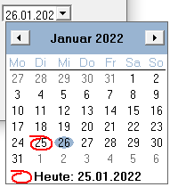
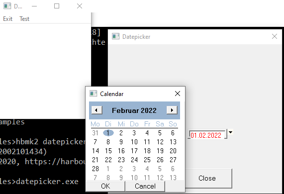
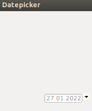
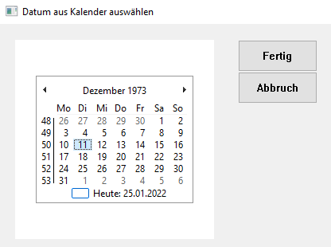
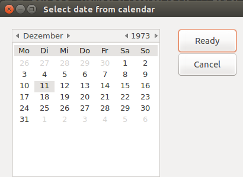

| Home page | HwGUI 2.23 reference manual | |
| prev | Alexander S.Kresin, October 2023 | next |
HFont():Select( oFont )
instead.
hwg_SelectFile( cDescript,cMask,[ cInitDir ], [ cTitle ] )
This function calls the standard dialog for file selecting.
- cDescript - this string appears in the dialog as a description of a file type. In
Windows version this parameter may be an array of descriptions (
{ "All files", "Dbf files"});
- cMask - string type parameter, describing the file mask (
"*.dbf", for example). In
Windows version this parameter may be an array of masks ({ "*.*", "*.dbf"});
The length of this array must be the same as of cDescript;
- cInitDir - optional string parameter, the initial directory for file selecting.
- cTitle - optional string parameter, the title of a dialog box.
- Return value - a string with a selected file name, or an empty string, if a file wasn't selected.
The user can select an existing file or input a new file name, if application will
create an new file.
On GTK:
hwg_Selectfile() ignores the mask and shows all files.
Use hwg_SelectfileEx() instead.
File extensions are not handled by this function.
Please use Harbour function RAT() to detect, if no file extension is entered and
add it in this case after returning of this function.
See sample program "samples/fileselect.prg" for usage of all file selection dialogs.
For Multi Platform purposes use the compiler switch "#ifdef __GTK__".
An example:
cFileName := hwg_Selectfile( {"dbf files( *.dbf )","All files(*.*)"}, ;
{"*.dbf","*.*"}, cPath )
hwg_SelectFileEx( [cTitle] [,cInitDir] [,aDescript] ) (GTK only)
Another standard dialog for file selection.
- cTitle - optional string parameter, the title of a dialog box.
- cInitDir - optional string parameter, the initial directory for file selecting.
- aDescript - an array like
{ { "Dbf files", "*.dbf" }, { "All files", "*" } } with
file masks and descriptions;
- Return value - a string with a selected file name, or an empty string, if a file wasn't selected.
Use this function instead of hwg_SelectFile() or hwg_SaveFile() with GTK.
Only for selecting an existing file, for creating a new file use hwg_SelectFile().
See sample program "samples/fileselect.prg" for usage of all file selection dialogs.
For Multi Platform purposes use the compiler switch "#ifdef __GTK__".
An example:
cFileName := hwg_SelectFileEx( ,, { { "Dbf files", "*.dbf" }, { "All files", "*" } } )
hwg_SelectFolder( cTitle )
The standard dialog for folder selection.
- cTitle - optional string parameter, the title of a dialog box.
- Return value - a string with a selected folder name, or an empty string, if a folder wasn't selected.
See sample program "samples/fileselect.prg" for usage of all file selection dialogs.
hwg_SaveFile( cPrompt,cDescript,cMask,cInitDir,cTitle ) (Windows only)
This function calls the standard dialog for file saving.
- cPrompt - this string appears as a prompt of a file name.
- cDescript - this string appears in the dialog as a description of a file type.
- cMask - string type parameter, describing the file mask.
- cInitDir - optional string parameter, the initial directory for file selecting.
- cTitle - optional string parameter, the title of a dialog box.
- Return value - a string with a selected file name, or an empty string, if a file wasn't selected.
This function is a suitable solution, if an application needs to overwrite an existing
file or create a new one, so that the user can input a file name of a non exiting file.
See sample program "samples/fileselect.prg" for usage of all file selection dialogs.
On GTK, use hwg_Selectfile() instead.
For Multi Platform purposes use the compiler switch "#ifdef __GTK__".
An example:
fname := hwg_Savefile( "*.htm","( *.htm )","*.htm", cPath )
hwg_PrintSetup( @cPrinterName ) (Windows only)
This function calls the standard dialog for printer selecting.
- Return value - handle to device context ( hDC ) of selected printer, 0 - if a printer wasn't selected.
- Writes to the cPrinterName parameter the name of a selected printer.
hwg_ChooseColor( nColorCurrent )
This function calls the standard dialog for color selecting.
- nColorCurrent - a numeric parameter, initial value of a color,
- Return value ( numeric ) - selected color, Nil - if a color wasn't selected.
5.2. MessageBoxes and HwGUI dialogs
hwg_MsgInfo( cMessage,cTitle )
hwg_MsgStop( cMessage,cTitle )
hwg_MsgOkCancel( cMessage,cTitle )
hwg_MsgYesNo( cMessage,cTitle )
hwg_MsgYesNoCancel( cMessage,cTitle )
hwg_MsgNoYes( cMessage,cTitle ) (Windows only)
hwg_MsgRetryCancel( cMessage,cTitle ) (Windows only)
hwg_MsgExclamation( cMessage,cTitle )
These all are standard message boxes with a different buttons set.
- cMessage - a message text;
- cTitle - a title of a box;
- Return value ( logical ) - for those of them, which has more than one button.
Special return values:
hwg_MsgYesNoCancel() : cancel = 0 , yes = 1 , no = 2
WinAPI: hwg_MsgOkCancel() : OK = 1 , Cancel = 2 , GTK: .T., .F.
hwg_MsgBeep( nSound ) (Windows only)
hwg_ShellAbout( cText1, cText2 [,hIcon] ) (Windows only)
hwg_MsgGet( cTitle, cText, nStyle, nLeft, nTop, nDlgStyle, cInitStr )
Creates a dialog box to input a string.
- cTitle - a title of a box;
- cText - a prompt for the input;
- nStyle - a WinAPI style for a GET item (ES_PASSWORD, for example);
- nLeft, nTop - coordinates of the left upper corner of a dialog box;
- nDlgStyle - a WinAPI style for a dialog;
- cInitStr - init value of a string;
- Return value ( string ) - the string, which you entered, empty - if you press CANCEL.
hwg_WChoice( arr, cTitle, nLeft, nTop, oFont, clrT, clrB, clrTSel, clrBSel, cOk, cCancel )
Creates a dialog box to select from a list.
- arr - an array, one-dimensional or multidimensional, which represents the list;
- cTitle - a header of a dialog box;
- nLeft, nTop - dialog box left upper corner coordinates;
- oFont - a font for a dialog, an object of HFont class;
- clrT, clrB - colors ( text and background ) of a browse;
- clrTSel, clrBSel - colors ( text and background ) of a selected row of a browse;
- cOk - a caption of a button to confirm selecting. If this parameter is omitted, the button will not present;
- cCancel - a caption of a button to cancel selecting. If this parameter is omitted, the button will not present;
- Return value - the number of selected row, 0 - if nothing is selected.
5.3. Drawing functions.
hwg_DefinePaintStru()
- Return value - a pointer to a paint structure.
It is called during the painting (usually it is a Paint() method),
together with two next functions, hwg_BeginPaint( handle, pps ) and
hwg_EndPaint( handle, pps ).
hwg_BeginPaint( handle, pps )
This function starts painting.
- handle - handle of a painted object;
- pps - a pointer to a paint structure;
- Return value - handle of a device context (hDC).
hwg_EndPaint( handle, pps )
This function ends painting.
- handle - handle of a painted object;
- pps - a pointer to a paint structure.
hwg_Getdrawiteminfo( lpDis ) (Windows only)
If a control has SS_OWNERDRAW style and messages for him aren't handled by HwGUI
(look at 3.9. Inside HwGUI),
the handler of ON PAINT gets as a second parameter a pointer to
DRAWITEMSTRUCT WinAPI structure, which contains an information, needed
to draw this control. A function hwg_GetDrawItemInfo( lpDis ) extracts this info
and returns to a programmer as an array.
While drawing these controls functions hwg_DefinePaintStru(),
hwg_BeginPaint(), hwg_EndPaint() shouldn't be used.
- lpDis - a pointer to
DRAWITEMSTRUCT;
- Return value - an array
aDrawItem with an information about widget being painted;
aDrawItem[3] - hDC;
aDrawItem[4] - nLeft, left border of drawing area;
aDrawItem[5] - nTop, top border of drawing area;
aDrawItem[6] - nRight, right border of drawing area;
aDrawItem[7] - nBottom, bottom border of drawing area;
hwg_GetClientRect( handle )
- handle - handle of a control;
- Return value - an array
aArea with a control client area coordinates;
aArea[1] - nLeft, left border of client area;
aArea[2] - nTop, top border of client area;
aArea[3] - nRight, right border of client area;
aArea[4] - nBottom, bottom border of client area;
hwg_SelectObject( hDC, handle )
This function selects an object of HFont, HPen or HBrush class as current for
drawing area, i.e., all subsequent drawing operations will use it.
- hDC - handle of the device context;
- handle - a variable
handle of an object of HFont, HPen or HBrush class.
For example:
// Create HPen object: a line thickness - 2px, a color - red
oPen := HPen():Add( BS_SOLID, 2, 255 )
// Select this object as current for hDC
hwg_Selectobject( hDC, oPen:handle )
// Draw a 2px red line
hwg_Drawline( hDC, 5, 1, 100, 1 )
hwg_DeleteObject( handle )
Deletes a font, a pen, a brush, a bitmap or an icon. Pay attention that this function works
on WinAPI/GTK level, it deletes not a HwGUI object, but WinaPI/GTK's.
Ususlly it isn't needed to call it directly from your application, the Release()
method of an appropriate HwGUI class does all necessary operations.
- handle - a variable
handle of an object of HFont, HPen, HBrush, HBitmap or HIcon class.
hwg_MoveTo( hDC, x1, y1 )
Changes current position of a pen on a drawing area.
- hDC - handle of the device context;
- x1, y1 - point coordinates.
hwg_LineTo( hDC, x1, y1 [, lClose] )
Draws a line from a current position to a point with given coordinates. Uses a pen,
selected with the help of hwg_SelectObject().
- hDC - handle of the device context;
- x1, y1 - point coordinates.
- lClose - an optional pframeter, GTK only, causes cairo_stroke() call.
hwg_Rectangle( hDC, x1, y1, x2, y2 [, hPen] )
Draws a rectangle with given coordinates. Uses a pen,
selected with the help of hwg_SelectObject(), if hPen parameter is not passed.
- hDC - handle of the device context;
- x1, y1 - left top corner coordinates;
- x2, y2 - right bottom corner coordinates.
- hPen - pen handle
hwg_Rectangle_Filled( hDC, x1, y1, x2, y2 [, hPen | lPen] [, hBrush] )
Draws a rectangle with given coordinates and fills it. Uses a pen,
selected with the help of hwg_SelectObject(), if hPen parameter is not passed. If
logical .F. passed instead, the rectangle border will be absent.
- hDC - handle of the device context;
- x1, y1 - left top corner coordinates;
- x2, y2 - right bottom corner coordinates.
- hPen - pen handle
- hBrush - brush handle
hwg_Triangle( hDC, x1, y1, x2, y2, x3, y3 [, hPen] )
Draws a triangle with given coordinates. Uses a pen,
selected with the help of hwg_SelectObject(), if hPen parameter is not passed.
If logical .F. passed instead, the triangle border will be absent.
- hDC - handle of the device context;
- x1, y1, x2, y2, x3, y3 - coordinates;
- hPen - pen handle
hwg_Triangle_Filled( hDC, x1, y1, x2, y2, x3, y3 [, hPen | lPen] [, hBrush] )
Draws a triangle with given coordinates. Uses a pen,
selected with the help of hwg_SelectObject(), if hPen parameter is not passed.
If logical .F. passed instead, the triangle border will be absent.
- hDC - handle of the device context;
- x1, y1, x2, y2, x3, y3 - coordinates;
- hPen - pen handle
- hBrush - brush handle
hwg_RoundRect( hDC, x1, y1, x2, y2, iRadius [, hPen] )
Draws a rectangle with rounded corners. Uses a pen,
selected with the help of hwg_SelectObject(), if hPen parameter is not passed.
- hDC - handle of the device context;
- x1, y1 - left top corner coordinates;
- x2, y2 - right bottom corner coordinates;
- iRadius - a radius of an ellipse used to draw rounded corners.
- hPen - pen handle
hwg_RoundRect_Filled( hDC, x1, y1, x2, y2, iRadius [, hPen | lPen] [, hBrush] )
Draws a rectangle with rounded corners. Uses a pen,
selected with the help of hwg_SelectObject(), if hPen parameter is not passed.
If logical .F. passed instead, the rectangle border will be absent.
- hDC - handle of the device context;
- x1, y1 - left top corner coordinates;
- x2, y2 - right bottom corner coordinates;
- iRadius - a radius of an ellipse used to draw rounded corners.
- hPen - pen handle
- hBrush - brush handle
hwg_Ellipse( hDC, x1, y1, x2, y2 [, hPen] )
Draws an ellipse in a rectangle with given coordinates. Uses a pen and a brush,
selected with the help of hwg_SelectObject(), if hPen is not passed.
- hDC - handle of the device context;
- x1, y1 - left top corner coordinates of a bounding rectangle;
- x2, y2 - right bottom corner coordinates of a bounding rectangle;
- hPen - pen handle
hwg_Ellipse_Filled( hDC, x1, y1, x2, y2 [, hPen | lPen] [, hBrush] )
Draws an ellipse in a rectangle with given coordinates and fills area inside. Uses a pen and a brush,
selected with the help of hwg_SelectObject(), if hPen or
hBrush parameter are not passed.
If logical .F. passed instead of hPen, the border will be absent.
- hDC - handle of the device context;
- x1, y1 - left top corner coordinates of a bounding rectangle;
- x2, y2 - right bottom corner coordinates of a bounding rectangle;
- hPen - pen handle
- hBrush - brush handle
hwg_DrawLine( hDC, x1, y1, x2, y2 )
Draws a line from one point to another. Uses a pen,
selected with the help of hwg_SelectObject().
- hDC - handle of the device context;
- x1, y1 - first point coordinates.
- x2, y2 - second point coordinates.
hwg_Pie( hDC, x1, y1, x2, y2, xr1, yr1, xr2, yr2 ) (Windows only)
Draws a pie-shaped wedge bounded by the intersection of an ellipse and two radials and fills area inside. Uses a pen and a brush,
selected with the help of hwg_SelectObject().
- hDC - handle of the device context;
- x1, y1 - left top corner coordinates of a bounding rectangle;
- x2, y2 - right bottom corner coordinates of a bounding rectangle;
- xr1, yr1 - coordinates of the endpoint of the first radial;
- xr2, yr2 - coordinates of the endpoint of the second radial.
hwg_FillRect( hDC, x1, y1, x2, y2, hBrush )
Fills a rectangle with given coordinates, using a passed brush.
- hDC - handle of the device context;
- x1, y1 - left top corner coordinates;
- x2, y2 - right bottom corner coordinates;
- hBrush - a handle of a brush ( may be
oBrush:handle ).
hwg_Drawbutton( hDC, x1, y1, x2, y2, nFlag )
Draws a button.
- hDC - handle of the device context;
- x1, y1 - left top corner coordinates;
- x2, y2 - right bottom corner coordinates;
- nFlag - determines, how to draw a button:
1 - normal;
2 - pressed;
5 - flat;
6 - flat pressed.
hwg_DrawEdge( hDC, x1, y1, x2, y2, nFlag, nBorder ) (Windows only)
Draws one or more edges of rectangle.
- hDC - handle of the device context;
- x1, y1 - left top corner coordinates;
- x2, y2 - right bottom corner coordinates;
- nFlag - the type of inner and outer edges, it is a combination of one
inner-border flag and one outer-border flag. For details look at the MSDN documentation for
DrawEdge() function.
- nBorder - the type of border, For details look at the MSDN documentation for DrawEdge() function.
hwg_gtk_DrawEdge( hDC, x1, y1, x2, y2, nFlag ) (GTK only)
Draws one or more edges of rectangle.
- hDC - handle of the device context;
- x1, y1 - left top corner coordinates;
- x2, y2 - right bottom corner coordinates;
- nFlag - determines, how to draw.
hwg_Arc( hDC, xc, yc, radius, iAngleStart, iAngleEnd )
Draws an arc with a center in xc, yc, with a radius from an angle
iAngleStart to iAngleEnd.
- Angles are passed in degrees.
- Corresponds to the standard X axis, drawing direction is clockwise.
hwg_drawGradient( hDC, x1, y1, x2, y2, int type, array colors, array stops, array radiuses )
This function draws rectangle with rounded corners and fill it with gradient pattern.
- hDC - handle of device context;
- x1 and y1 - coordinates of upper left corner;
- x2 and y2 - coordinates of bottom right corner;
- type - the type of gradient filling:
1 - vertical and down;
2 - vertical and up;
3 - horizontal and to the right;
4 - horizontal and to the left;
5 - diagonal right-up;
6 - diagonal left-down;
7 - diagonal right-down;
8 - diagonal left-up;
9 - radial gradient;
- colors - our colors (maximum - 16 colors), a color can be represented as 0xBBGGRR;
- stops - fractions on interval [0;1] that correspond to the colors,
a stop determines the position where the corresponding color reaches its maximum;
- radiuses - for our rounded corners:
first - for upper left;
second - for upper right;
third - for bottom right;
fourth - for bottom left;
hwg_OpenImage( cName | cBody [, lMem] )
Create a bitmap from the data stored in an image file or in a passed data.
In most cases you don't need to call this function directly, use HBitmap():AddFile(cName) instead.
- cName | cBody - the name of an image file or a string with a previously loaded image file content;
- lMem - a logical variable must be set to .T., if a first parameter is a string with an image file content;
- Return value - handle of a bitmap;
hwg_OpenBitmap( cName [, hDC] )
Creates a bitmap from the data stored in the bmp file.
In most cases you don't need to call this function directly, use HBitmap():AddFile(cName) instead.
- cName - name of a bmp file;
- hDC - (optional) handle to a current device context.
- Return value - handle of a bitmap;
hwg_SaveBitmap( cName, hBitmap )
hwg_StockBitmap( cName [,nSizeType] ) (GTK only)
GTK has a number of predefined stock icons, which can be used in application.
It is very convenient because it saves the programmer from having to store the image files included with the executable.
This function creates a bitmap from a stock object.
In most cases you don't need to call this function directly, use HBitmap():AddStandard(cName) instead.
- cName - name of a stock object. The set of names you may see, for example,
with the help of Tutorial utility, chapter "Advanced using of controls", module "Browse of bitmaps" ;
- nSizeType - (optional) type of a size, may be one of following:
GTK_ICON_SIZE_MENU,
GTK_ICON_SIZE_SMALL_TOOLBAR,
GTK_ICON_SIZE_LARGE_TOOLBAR,
GTK_ICON_SIZE_BUTTON (default),
GTK_ICON_SIZE_DND,
GTK_ICON_SIZE_DIALOG;
- Return value - handle of a bitmap;
hwg_DrawBitmap( hDC, hBitmap, style, x, y [, width, height] )
Draws a bitmap.
- hDC - handle of device context;
- hBitmap - handle of a bitmap (
oBitmap:handle usually);
- style - (optional parameter, for WinAPI only). By default the value is SRCCOPY: copies the source rectangle directly to the destination rectangle;
- x, y - coordinates of a point where to start drawing bitmap (left top corner);
- width, height - width and height of a destination image (optional parameters, by default - original bitmap size).
hwg_DrawTransparentBitmap( hDC, hBitmap, x, y [,trColor] [, width, height] )
Draws a transparent bitmap.
- hDC - handle of device context;
- hBitmap - handle of a bitmap (
oBitmap:handle usually);
- x, y - coordinates of a point where to start drawing bitmap (left top corner);
- trcolor - transparent color;
- width, height - width and height of a destination image (optional parameters, by default - original bitmap size).
hwg_Drawgraybitmap( hDC, hBitmap, x, y ) (Windows only)
Draws a bitmap in grayscale mode.
- hDC - handle of device context;
- hBitmap - handle of a bitmap (
oBitmap:handle usually);
- x, y - coordinates of a point where to start drawing bitmap (left top corner).
hwg_SpreadBitmap( hDC, hBitmap [, nLeft, nTop, nRight, nBottom] )
This funtion spreads a bitmap over all the drawing area or within rectangle with passed coordinates by multiplying.
- hDC - handle of device context;
- hBitmap - handle of a bitmap (
oBitmap:handle usually);
- nLeft, nTop, nRight, nBottom - coordinates of a rectangle (optional).
hwg_Drawicon( hDC, hIcon, x1, y1 ) (Windows only)
Draws an icon.
- hDC - handle of device context;
- hIcon - handle of an icon (
oIcon:handle usually);
- x, y - coordinates of a point where to start drawing an icon (left top corner);
hwg_CenterBitmap( hDC, hWnd, hBitmap, style, brush ) (Windows only)
hwg_GetBitmapSize( hBitmap )
Returns an array with the size (width and height) of a bitmap.
- hBitmap - handle of a bitmap (
oBitmap:handle usually);
- Return value - an array:
aArray[1] - width of a bitmap;
aArray[2] - height of a bitmap.
hwg_GetBitmapHeight( hBitmap )
hBitmap : Handle of a bitmap object, for example "oBitmap:handle".
Returns the height of a bitmap.
hwg_GetBitmapWidth( hBitmap )
hBitmap : Handle of a bitmap object, for example "oBitmap:handle".
Returns the width of a bitmap.
hwg_GetIconSize( hIcon ) (Windows only)
Returns an array with the size (width and height) of an icon.
- hBitmap - handle of an icon (
oIcon:handle usually);
- Return value - an array:
aArray[1] - width of an icon;
aArray[2] - height of an icon.
hwg_Getsyscolor( nCode )
Retrieves the current color of the specified display element. Display elements are the parts of a window and the display that appear on the system display screen.
In GTK version always return a background color of a main window.
- nCode - look at MSDN,
GetSysColor() function.
- Return value - numeric color representation.
hwg_GetsyscolorBrush( nCode ) (Windows only)
Retrieves a brush handle, corresponding to a current color of the specified display element. Display elements are the parts of a window and the display that appear on the system display screen.
- nCode - look at MSDN,
GetSysColor() function.
- Return value - a brush handle.
hwg_Createpen( nStyle, nWidth, nColor )
Creates a pen with given parameters.
Usually it isn't needed to call this function directly, use HPen():Add() instead.
- nStyle - a pen style ( PS_SOLID, PS_DASH, PS_DOT, ... );
- nWidth - a pen thickness;
- nColor - numeric color representation;
- Return value - a pen handle.
hwg_Createsolidbrush( nColor )
Creates a brush that has the specified color.
Usually it isn't needed to call this function directly, use HBrush():Add() instead.
- nColor - numeric color representation;
- Return value - a brush handle.
hwg_Createhatchbrush( nHatch, nColor ) (Windows only)
Creates a brush that has the specified hatch pattern and color.
Usually it isn't needed to call this function directly, use HBrush():Add() instead.
- nHatch - the hatch style of the brush, look at MSDN,
CreateHatchBrush() function.;
- nColor - numeric color representation;
- Return value - a brush handle.
hwg_GetDC( hWnd )
Returns handle of device context of GUI element. After using this handle
must be released with a help of hwg_ReleaseDC( hWnd, hDC ).
- hWnd - handle of GUI element;
- Return value - handle of device context.
hwg_ReleaseDC( hWnd, hDC )
Releases handle of device context, which was created using hwg_GetDC( hWnd ).
- hWnd - handle of appropriate GUI element;
- hDC - handle of device context.
hwg_SaveDC( hDC ) (Windows only)
hwg_DeleteDC( hDC ) (Windows only)
hwg_Restoredc( hDC, nSavedDC ) (Windows only)
hwg_CreateCompatibleDC( hDC )
hwg_CreateCompatibleBitmap( hDC, nWidth, nHeight ) (Windows only)
hwg_Patblt( hDc, a, s, d, f, g ) (Windows only)
hwg_Bitblt( hDc, x, y, nWidth, nHeight, pSrcDC, xSrc, ySrc, nFlag )
hwg_Setmapmode( hDC, nMapMode ) (Windows only)
hwg_Setwindoworgex( hDC, x, y, @point ) (Windows only)
hwg_Setwindowextex( hDC, x, y, @point ) (Windows only)
hwg_Setviewportorgex( hDC, x, y, @point ) (Windows only)
hwg_Setviewportextex( hDC, x, y, @point ) (Windows only)
hwg_Setarcdirection( hDC, nArcDirection ) (Windows only)
hwg_Setrop2( hDC, nDrawMode ) (Windows only)
hwg_DrawFrameControl( hDC, nType, nState ) (Windows only)
hwg_TextOut( hDC, x, y, cText )
Draws a text. Uses a font, selected with the help of hwg_SelectObject().
- hDC - handle of the device context;
- x1, y1 - coordinates of a start point.
- cText - the text string to draw.
hwg_DrawText( hDC, cText, x1 | aRect [, y1, x2, y2, nStyle [,aRect]] )
Draws a text in a given rectangle, aligned accorgingly to a passed parameter.
Uses a font, selected with the help of hwg_SelectObject().
- hDC - handle of the device context;
- cText - the text string to draw.
- x1, y1, x2, y2 - text area coordinates;
- aRect - an array with text area coordinates, may be passed instead of x1, y1, x2, y2;
- nStyle - alignment style: DT_LEFT (by default), DT_CENTER, DT_RIGHT.
hwg_GetTextMetric( hDC )
Returns an array with geometric text parameters for a given device contect, for a font, selected with the help of hwg_SelectObject().
- hDC - handle of the device context;
- Return value - an array:
array[1] - a text height,
array[2] - average character width;
array[3] - maximal character width; (WinAPI only)
array[4] - tmExternalLeading; (WinAPI only)
array[5] - tmInternalLeading; (WinAPI only)
array[6] - tmAscent; (WinAPI only)
array[7] - tmDescent; (WinAPI only)
array[8] - tmWeight. (WinAPI only)
hwg_GetTextSize( hDC, cText )
Returns an array with geometric text size for a given device contect, for a font, selected with the help of hwg_SelectObject().
- hDC - handle of the device context;
- Return value - an array:
array[1] - a text width,
array[2] - a text height;
hwg_GetClientRect( handle )
hwg_GetWindowRect( handle )
hwg_SetTextColor( hDC, nColor )
Sets text color for a drawing.
- hDC - handle of the device context;
- nColor - new color value;
- Return value - previous color value.
hwg_GetTextColor( hDC )
Returns current text color setting for a drawing area.
- hDC - handle of the device context;
- Return value - previous color value.
hwg_SetBkColor( hDC, nColor )
Sets background color for a drawing.
- hDC - handle of the device context;
- nColor - new color value;
- Return value - previous color value.
hwg_GetBkColor( hDC )
Returns current background color setting for a drawing area.
- hDC - handle of the device context;
- Return value - previous color value.
hwg_SetTransparentMode( hDC, lTransparent )
Sets or unsets a transparent mode for a writing text on a drawing area.
- hDC - handle of the device context;
- lTransparent - boolean value, sets a transparent mode if true, unsets - if false.
hwg_Exttextout( hDC, x, y, x1, y1, x2, y2, cText ) (Windows only)
hwg_WindowFromDC( hDC ) (Windows only)
Retrieves a handle of GUI element by it hDC.
- hDC - handle of device context;
- Return value - handle of GUI element.
hwg_Loadimage( hInstance, cName, nType, nWidth, nHeight, nFlags ) (Windows only)
hwg_Loadbitmap( nId | cName [,l] ) (Windows only)
hwg_Window2bitmap( hWnd, x1, y1, width, height )
Creates a bitmap from a given region of a window or control. If coordinates aren't
passed, the whole window is used.
- hWnd - window handle;
- x1, y1 - coordinates of a top left corner of a selected region;
- width, height - width and height of a selected region;
- Return value - handle of a bitmap.
hwg_RedrawWindow( handle, nFlags, x1, y1, nWidth, nHeight )
hwg_Invalidaterect( handle, lEraseBack, x1, y1, x2, y2 )
hwg_GetPpsRect( pps ) (Windows only)
hwg_GetPpsErase( pps ) (Windows only)
hwg_GetUpdateRect( hWnd ) (Windows only)
5.4. Windows handling functions.
hwg_GetModalDlg()
- Return value - an object of HDialog class, a current modal dialog;
Nil - if there is no opened modal dialog.
hwg_EndDialog( [handle] )
Closes a dialog with a handle; if handle isn't passed,
the current modal dialog is closed.
- handle - optional parameter, a handle of a dialog window, which should be closed.
hwg_EndWindow()
Closes the main window.
hwg_isWindow( hWnd ) (Windows only)
Determines whether the specified window handle identifies an existing window.
- Return value (logical) - .T., if the window handle identifies an existing window.
hwg_FlashWindow( hWnd ) (Windows only)
Flashes the specified window one time - change the appearance of its caption bar
as if the window were changing from inactive to active status, or vice versa.
- hWnd - window handle.
hwg_GetActiveWindow()
- Return value - handle of an active window.
hwg_GetInstance (Windows only)
hwg_SetWindowStyle( handle, nStyle ) (Windows only)
This function sets a WinAPI style to GUI element.
- handle - handle of GUI element;
- nStyle - WinAPI style.
hwg_GetWindowStyle( handle ) (Windows only)
This function returns a WinAPI style of GUI element.
- handle - handle of GUI element;
- Return value - (numeric) WinAPI style.
hwg_SetWindowExStyle( handle, nStyle ) (Windows only)
This function sets an extended WinAPI style to GUI element.
- handle - handle of GUI element;
- nStyle - an extended WinAPI style.
hwg_GetWindowExStyle( handle ) (Windows only)
This function returns an extended WinAPI style of GUI element.
- handle - handle of GUI element;
- Return value - (numeric) an extended WinAPI style.
hwg_FindWindow( cClassName, cWindowName) (Windows only)
hwg_SetForegroundWindow( handle ) (Windows only)
hwg_BringToTop( handle ) (Windows only)
Sets the window over all other windows.
- handle - window handle.
hwg_ResetWindowPos( handle ) (Windows only)
hwg_UpdateWindow( handle ) (Windows only)
hwg_CenterWindow( handle )
Centers a window on a screen.
- handle - window handle.
hwg_RestoreWindow( handle )
Restores the default window size.
- handle - window handle.
hwg_EnableWindow( handle, lEnable )
Enables or disables GUI element (window or control).
- handle - handle of a GUI element;
- lEnable - (logical) enable, if .T., disable if .F..
hwg_isWindowEnabled( handle )
Checks, if the GUI element (window or control) is enabled.
- handle - handle of a GUI element;
- Return value - (logical) .T., if GUI element is enabled.
hwg_HideWindow( handle )
Hide GUI element (window or control).
- handle - handle of a GUI element.
hwg_ShowWindow( handle )
Show GUI element (window or control).
- handle - handle of a GUI element.
hwg_ProcessMessage( [lMdi] [, nSleep] )
hwg_PeekMessage( hWnd ) (Windows only)
hwg_DoEvents() (Windows only)
hwg_SendMessage( handle, nMessage, wParam, lParam ) (Windows only)
hwg_PostMessage( handle, nMessage, wParam, lParam ) (Windows only)
hwg_SetWindowObject( handle, object )
hwg_GetWindowObject( handle )
hwg_SetWindowText( handle, cTitle )
Changes the text of the specified window's title bar or the text of a control.
- handle - handle of a GUI element;
- cTitle - the text.
hwg_GetWindowText( handle )
Returns the text of the specified window's title bar or the text of a control.
- handle - handle of a GUI element;
- Return value - the text.
hwg_SetWindowFont( handle, hFont, l ) (Windows only)
hwg_GetLastError() (Windows only)
hwg_isIconic( hWnd )
hwg_isWindowVisible( hWnd )
hwg_ExitProcess() (Windows only)
hwg_WindowSetResize( hWnd, lResizeable )
Sets the window resizeable or no resizeable.
- hWnd - handle of a window;
- lResizeable - boolean argument.
hwg_SetTopmost( hWnd )
hwg_RemoveTopmost( hWnd )
hwg_ChildWindowFromPoint( hWnd, x, y ) (Windows only)
hwg_WindowFromPoint( hWnd, x, y ) (Windows only)
hwg_GetFontDialogUnits( hWnd ) (Windows only)
hwg_GetWindowPlacement( handle ) (Windows only)
hwg_ClearKeyboard() (Windows only)
5.5. Controls handling functions.
hwg_SetFocus( handle )
Sets the keyboard focus to the specified GUI element (window or control).
- handle - handle of a GUI element;
- Return value - handle to the GUI element that previously had the keyboard focus.
hwg_GetFocus()
Retrieves the handle to the GUI element (window or control) that has the keyboard focus.
- Return value - handle to the GUI element that has the keyboard focus.
hwg_WriteStatus( oWnd, nPart, cText, lRedraw )
Writes a text string to a fragment of a status pane. This function works for a standard Status
and or a Status Panel.
- oWnd - the window with the status pane, an object of one of subclasses of HWindow class;
- nPart - a number of a fragment of the status pane;
- CText - a text for the status pane;
- lRedraw - .T., to redraw status pane immedeately.
hwg_FindParent( hCtrl )
Returns an object of a parent GUI element for a widget by it handle.
- hCtrl - a handle of a widget;
- Return value - an object of a parent GUI element.
hwg_FindSelf( hCtrl )
Returns an object of a widget by it handle.
- hCtrl - a handle of a widget;
- Return value - an object of a widget.
hwg_getParentForm( oCtrl )
Returns an object of a window, which includes a given widget. The distinction from hwg_FindParent()
is the following: hwg_FindParent() looks for a direct parent, it may be another widget, such as Tab,
Panel or Toolbar. hwg_getParentForm() always returns a window, which includes the given widget.
- oCtrl - an object of a widget;
- Return value - an object of a window.
hwg_MoveWindow( handle, nLeft, nTop, nWidth, nHeight, lRepaint )
hwg_DestroyWindow( handle )
hwg_Createarlist( oBrw, arr )
For BROWSE of arrays:
Copies the array to browse into the
browse object.
Usage see sample program "arraybrowse.prg".
arr: an array with 2 dimensions, for example
al_DOKs := { {"1"} , {"2"} , {"3"} , {"4"} }
...
Sample for read out the edited array:
@ 360,410 BUTTON oBtn4 CAPTION "OK " SIZE 80,26 ;
ON CLICK { | | bCancel := .F. , ;
al_DOKs := oBrwArr:aArray , ;
hwg_EndDialog() }
hwg_CreateList( oBrw, lEditable )
hwg_VScrollPos( oBrw, nType, lEof, nPos )
hwg_HScrollPos( oBrw, nType, lEof, nPos )
hwg_ColumnArBlock()
hwg_ShowProgress( nStep, maxPos, nRange, cTitle, oWnd, x1, y1, width, height ) (Windows only)
hwg_UpdateProgressBar( handle )
hwg_SetProgressBar( handle, nPos )
hwg_SetRangeProgressBar( handle, nValue )
hwg_trackbarsetrange( handle, nLow, nHigh ) (Windows only)
hwg_SetMonthCalendarDate( handle , dValue )
hwg_GetMonthCalendarDate( handle )
hwg_Setctrlfont( parentHandle, nId, hFont ) (Windows only)
hwg_Setctrlfont( handle, hFont ) (GTK only)
hwg_DefaultFont()
Returns an object with a suitable default font
for Windows and LINUX, OS dependent.
hwg_AddTooltip( handle, cTooltip )
Add a tooltip to the control.
- handle - handle of the control;
- cTooltip - a text of a tooltip.
hwg_DelTooltip( handle )
Delete a tooltip of the control.
- handle - handle of the control.
hwg_SetTooltipTitle( handle, cTooltip )
Update the text of a tooltip.
- handle - handle of the control;
- cTooltip - a new text of a tooltip.
hwg_SetUpdown( handle, nValue )
hwg_SetRangeUpdown( handle, n1, n2 )
hwg_SetDatePicker( handle, dValue ) (Windows only)
hwg_SetDatePickerNull( handle ) (Windows only)
hwg_GetDatePicker( handle ) (Windows only)
hwg_GetTimePicker( handle ) (Windows only)
hwg_GetTimePicker( handle ) (Windows only)
hwg_pCalendar(dstartdate, cTitle , cOK, cCancel , nx , ny , wid, hei )
This function calls the calendar for date selection
in design like the WinAPI datepicker.
Based on the MONTHCALENDAR command.
dstartdate : Date of start, if NIL, the default is "today" from system date.
cTitle : Title for this dialog, default is "Calendar"
cOK : Caption for OK button, default is "OK"
cCancel : Caption for cancel button, default is "Cancel"
nx , ny : Position in calling Window (default 0, 0)
wid, hei : Width and height of the calendar window, add 23 pixels
to height for size of dialog (space for buttons needed).
Default is 200, 160.
Returns the selected date (type "D").
For details see inline comments of sample programs
"samples/datepicker.prg" and "samples/testget1.prg".
Here you find instructions to create a multiplatform substitute
for the Windows only DATEPICKER.
Some Screenshots:
Datepicker Windows:
(Heute = today)

Datepicker substitute Windows all screens:

Datepicker LINUX (Sample program datepicker.prg):

Windows MONTHCALENDAR command:
(Fertig = Ready, Abbruch = Cancel)

LINUX MONTHCALENDAR command:

hwg_AddTab( handle, cName )
hwg_DeleteTab( handle, nPage )
hwg_GetCurrentTab( handle )
hwg_SetCurrentTab( handle, nPage ) (GTK only)
hwg_SetTabSize( handle, nWidth, nHeight ) (Windows only)
hwg_GetTabHeight( handle ) (Windows only)
hwg_SetTabName( handle, nPage, cName )
hwg_CreateImageList( aImages, nWidth, nHeight, nGrow, nFlags ) (Windows only)
hwg_DestroyImageList( handle ) (Windows only)
hwg_Imagelist_Add( handle, hBitmap ) (Windows only)
hwg_Imagelist_AddMasked( handle, hBitmap, nMask ) (Windows only)
hwg_ImageList_GetImageCount( handle ) (Windows only)
hwg_getParent( handle )
Returns handle of a parent GUI element, using a system call WinAPI/GTK - so,
it is faster, than with the help of oParent variable of appropriate object.
- handle - handle of a control;
- Return value - handle of a parent GUI element.
hwg_getAncestor( handle ) (Windows only)
hwg_LoadCursor( cursor )
Loads a cursor from stock and returns its handle.
GTK: Parameter "cursor" is a numeric value for identifying
the standard cursor from stock.
Allowed values are defined in HWGUI include file "gtk.ch" as
GDK_* definitions, for example:
GDK_ARROW Standard arrow
GDK_SB_V_DOUBLE_ARROW Double pointed arrow pointing north and south
GDK_SB_H_DOUBLE_ARROW Double pointed arrow pointing west and east
Attention !
Invalid value may cause crash or freeze of program.
WinAPI: Parameter "cursor" is a numerical value.
It is evaluated from a string for the second parameter of WinAPI function
"LoadCursor(hInstance,lpCursorName)"
by macro
MAKEINTRESOURCE(n) (used in HWGUI source file "control.c").
The allowed values are defined in include "winuser.h"
as IDC_* definitions, for example:
IDC_ARROW Standard arrow
IDC_SIZENS Double pointed arrow pointing north and south
IDC_SIZEWE Double pointed arrow pointing west and east
(not the same cursors as described for GTK above)
For setting of parameter for hwg_LoadCursor()
look into the WinAPI include file "winuser.h"
to get the numerical value, for example:
IDC_ARROW : 32512
IDC_SIZENS : 32645
IDC_SIZEWE : 32644
Invalid value loads the IDC_ARROW, it is the default cursor.
To display the cursor, call functions
hwg_SetCursor() and hwg_ShowCursor().
Use the compiler switch "#ifdef __GTK__" for
use in multi platform applications.
See sample program "testspli.prg".
hwg_LoadCursorFromFile(ccurFname) (Windows only)
Loads a cursor from a "*.cur" type file and returns its handle.
ccurFname : Filename (and path) of cursor file name.
In case of errors the handle for default cursor "Arrow" is
returned.
Cursor files are created and edited with special
cursor editor programs.
So it is possible to use customized cursor's in an HWGUI application.
To display the cursor, call functions
hwg_SetCursor() and hwg_ShowCursor().
Use the compiler switch "#ifdef __GTK__" for
use in multi platform applications.
hwg_LoadCursorFromFile(ccurFname,x,y) (GTK only)
Loads a cursor from a "*.cur" type file and returns its handle.
This is the special version for GTK and has the additional parameters x and y.
All other descriptions see WinAPI version of this function.
Uses the following GTK function for creating the cursor:
GdkCursor* gdk_cursor_new_from_pixbuf(GdkDisplay *display,GdkPixbuf *pixbuf, gint x, gint y)
The parameters x and y are mandatory.
x: the horizontal offset of the 'hotspot' of the cursor
y: the vertical offset of the 'hotspot' of the cursor
We suggest, to try for x and y the half size value of pixels.
The value of the resulting pixbuf (not the file size of the *.cur file)
may not exceed 4095 bytes.
For details read the GTK 2 reference.
Use the compiler switch "#ifdef __GTK__" for
use in multi platform applications.
hwg_LoadCursorFromString(cVal, nx , ny)
Loads a cursor from a binary variable and returns its handle.
It is an equivalent to functions "hwg_LoadCursorFromFile()" for WinAPI and GTK.
For details look to the descriptions of this functions.
Parameters nx and ny are ignored on WinAPI, but set them for multi platform applications.
Strategy:
1) Create the *.cur file with an suitable cursor editor.
2) Create an hex value from this file with utility "file2hex.prg"
in directory "utils\bincnt".
3) In your program, convert the hex values into binary with function "hwg_cHex2Bin()".
Create the handle of cursor by calling function "hwg_LoadCursorFromString()".
4) To display the cursor, call functions hwg_SetCursor() and hwg_ShowCursor().
See sample program "testspli.prg" for details.
hwg_SetCursor( cursor, hCtrl )
- cursor - cursor handle;
- hCtrl - handle of the widget under cursor (GTK only).
hwg_GetCursor() (Windows only)
hwg_SetTooltipBalloon( lBalloon ) (Windows only)
The tooltip balloon is a nice gimmick of Windows and is not available in GTK,
so this function is an "empty function".
For compatible purposes you can set
hwg_Settooltipballoon(.T.)
as you like in your app, but the function call has no effect in GTK.
In GTK, the tooltip is always displayed in an rectangle.
hwg_GetTooltipBalloon() (Windows only)
hwg_SetDlgItemText( parentHandle, nId, cText ) (Windows only)
Sets the title or text of a control.
- parentHandle - handle of a parent window (
oCtrl:oParent:handle);
- nId - id of a control (
oCtrl:id);
- cText - text string to be set.
hwg_GetDlgItemText( parentHandle, nId ) (Windows only)
Retrieves the title or text associated with a control.
- parentHandle - handle of a parent window (
oCtrl:oParent:handle);
- nId - id of a control (
oCtrl:id);
- Return value - text string, displayed in a control.
hwg_GetEditText( parentHandle, nId ) (Windows only)
Retrieves the text associated with an edit control.
- parentHandle - handle of a parent window (
oCtrl:oParent:handle);
- nId - id of a control (
oEdit:id);
- Return value - text string, displayed in an edit control.
hwg_edit_Getpos( handle )
Returns the cursor position in an edit control.
- handle - handle of an edit control (
oEdit:handle);
- Return value - a number 1 ... - a cursor position.
hwg_edit_Setpos( handle, nPos )
Sets the cursor position in an edit control.
- handle - handle of an edit control (
oEdit:handle);
- nPos - number 1 ... - a cursor position.
hwg_CheckDlgButton( parentHandle, nId, lValue ) (Windows only)
hwg_isDlgButtonChecked( parentHandle, nId ) (Windows only)
hwg_ComboAddString( handle, cText ) (Windows only)
hwg_ComboInsertString( handle, nPos, cText ) (Windows only)
hwg_ComboSetString( handle, nPos ) (Windows only)
hwg_ListboxAddString( handle, cValue ) (Windows only)
hwg_ModifyStyle( hWnd, nStyleDel, nStyleAdd ) (Windows only)
hwg_re_SetCharFormat( hCtrl, n1, n2, nColor, cName, nHeight, lBold, lItalic, lUnderline, nCharset, lSuperScript/lSubscript, lProtected ) (Windows only)
hwg_re_SetDefault( hCtrl, nColor, cName, nHeight, lBold, lItalic, lUnderline, nCharset ) (Windows only)
hwg_re_CharFromPos( hEdit, xPos, yPos ) (Windows only)
hwg_re_GetTextRange( hEdit, n1, n2 ) (Windows only)
hwg_re_GetLine( hEdit, nLine ) (Windows only)
hwg_re_InsertText( hEdit, cText ) (Windows only)
hwg_re_FindText( hEdit, cFind, nStart, bCase, bWholeWord, bSearchUp ) (Windows only)
hwg_re_SetZoom( hEdit, nNum, nDen ) (Windows only)
hwg_re_ZoomOff( hEdit ) (Windows only)
hwg_re_GetZoom( hEdit, @nNum, @nDen ) (Windows only)
hwg_PrintRtf( hEdit, hDC ) (Windows only)
hwg_SaveRichedit( hEdit, cFileName ) (Windows only)
hwg_LoadRichedit( hEdit, cFileName ) (Windows only)
5.6. Menu functions.
Hwg_AddMenuItem( aMenu, cItem, nMenuId, lSubMenu, bItem, nPos )
Hwg_DefineMenuItem( cItem, nId, bItem, lDisabled, accFlag, accKey, lBitmap, lResource, lCheck )
Hwg_DefineAccelItem( nId, bItem, accFlag, accKey )
Hwg_InsertBitmapMenu( aMenu, nId, lBitmap, oResource ) (Windows only)
Hwg_SetMenuItemBitmaps( aMenu, nId, abmp1, abmp2 ) (Windows only)
hwg_DeleteMenuItem( oWnd, nId )
Hwg_FindMenuItem( aMenu, nId, nPos )
Searches menu item with id "nId" in an menu array "aMenu" inclusive
all submenus (recursive search).
Returns the array with match of nId, if no match NIL.
nPos returns via call by reference the position in the menu found:
For example:
LOCAL nPos
nPos := 1
Hwg_FindMenuItem( aMenu[ 1,nPos ] , nId, @nPos1 )
hwg_CheckMenuItem( xWnd, nId, lValue )
Checks or unchecks a menu item
- xWnd - it may be a handle of a window - menu owner, or a context menu object,
if it is an empty value (Nil), the main window menu is used;
- nId - id of a menu item;
- lCheck - logical value: if .T. item will be checked, if .F. - unckecked.
hwg_IsCheckedMenuItem( xWnd, nId )
Return the state of a window (checked or unchecked)
- xWnd - it may be a handle of a window - menu owner, or a context menu object,
if it is an empty value (Nil), the main window menu is used;
- nId - id of a menu item;
- Return value - logical value: if .T. the item is checked, if .F. - unckecked.
hwg_EnableMenuItem( xWnd, nId, lValue )
Enables or disables a menu item
- xWnd - it may be a handle of a window - menu owner, or a context menu object,
if it is an empty value (Nil), the main window menu is used;
- nId - id of a menu item;
- lValue - logical value: if .T. item will be enabled, if .F. - disabled.
hwg_IsEnabledMenuItem( xWnd, nId )
Return the state of a window (enabled or disabled)
- xWnd - it may be a handle of a window - menu owner, or a context menu object,
if it is an empty value (Nil), the main window menu is used;
- nId - id of a menu item;
- Return value - logical value: if .T. the item is enabled, if .F. - disabled.
hwg_SetMenuCaption( xWnd, nId, cText )
hwg_GetMenuCaption( xWnd, nId )
<not available>
Returns the caption (string) of a menu item defined by the id of a menu item
- xWnd - it may be a handle of a window - menu owner, or a context menu object,
if it is an empty value (Nil), the main window menu is used;
- nId - id of a menu item.
hwg_DrawMenuBar( hWnd )
5.7. Windows registry.
Comment for multi platform programs:
It is not a good idea, to store program settings in the registry.
Use configuration files instead, following formats are possible:
- XML files (best choice, strictly recommended for new applications),
- Ini files (*.ini), see comment for function Hwg_WriteIni(),
- Clipper MEM files, are supported by Harbour of course,
- Pure text files.
The registry functions can be useful for writing a multi platform setup program
with HWGUI.
Use the compiler switch "#ifndef __GTK__" to hide the registry functions on
non Windows systems.
hwg_RegCreateKey( handle, cKeyName ) (Windows only)
hwg_RegOpenKey( handle, cKeyName ) (Windows only)
hwg_RegCloseKey( handle ) (Windows only)
hwg_RegSetString( handle, cKeyName, cKeyValue ) (Windows only)
hwg_RegSetBinary( handle, cKeyName, cBinValue ) (Windows only)
hwg_RegGetValue( handle, cKeyName [,nType] ) (Windows only)
5.8. Miscellaneous functions.
hwg_GetDirSep()
Returns the directory seperator character OS dependant.
- Windows: "\"
- UNIX/LINUX: "/"
hwg_CurDrive()
Windows:
Returns the current drive letter with suffix ":\",
so that complete path values can be easy concatenated.
This function works also on GTK cross development environment.
UNIX/LINUX:
Returns for multi platform usage an empty String "".
Use this function like the Windows version.
hwg_CurDir()
Returns full path of current directory.
The Harbour function CurDir() does not return the
leading "\" or "/" Character.
To assemble a full path and filename, follow this example:
href="hwgdoc.html#_Functions81">cp := hwg_CurDir() + hwg_GetDirSep() + "sample.txt"
This function returns the complete path with drive letter on Windows.
This function works also on GTK cross development environment.
hwg_EOLStyle()
Returns the "End Of Line" (EOL) character(s) OS dependent.
Windows: 0D0A (CRLF)
LINUX/UNIX: 0A (LF)
This function works also on GTK cross development environment.
MacOS not supported yet.
Must then return 0D (CR).
hwg_GetItemByName( arr, cName )
Returns an object from an array by its name, which is kept as :objname.
- arr - an array with HwGUI objects,
- cName - a name of HwGUI object.
hwg_Version( n )
Returns an information about current HwGUI version. The optional parameter defines
the kind of information:
- n == 1: returns a short string with version number, e.g. "2.20",
- n == 2: returns an integer build number,
- n == 3: returns a logical value, which tells, if this is a UNICODE build,
- n is omitted: returns a string with full information.
Instructions for programmer, who publishes a new HWGUI release:
Set release and build number in this include file before a new release is created:
include\guilib.ch
Reset the values of HWG_VERSION to "Code Snapshot" and
HWG_BUILD to 0 after publification of a new HWGUI release.
hwg_Trace()
The function is intended for debugging purposes. It returns a current procedures stack.
hwg_WriteLog( cText [, fname] )
Adds a text to a file, the function is intended for debugging purposes.
- cText - the text to be written;
- fname - (optional) a file name, the default is "a.log".
void hwg_writelog( const char * sFile, const char * sTraceMsg, ... )( cText [, fname] )
C function simular to hwg_WriteLog, for use in C modules of your application.
Adds a text to a file, the functions is intended for debugging purposes.
- sTraceMsg - pointer to a string with the text to be written;
- sFile - (optional) pointer to a string with file name, the default is "ac.log", set to NULL for default value.
A sample code snippet to log numeric values:
char debug[100];
int num = 1000;
itoa(num,&debug,10);
hwg_writelog(NULL,&debug);
hwg_SetDlgKey( [oDlg], nCtrl, nKey, block [, lGlobal] )
Sets a "hot key" for a window/dialog or globally - for all the application. There is
appropriate command, which is preprocessed into this function: SET KEY.
- oDlg - (optional, default value is default parent window) an object of subclass of HWindow, the window, a key is set for;
- nCtrl - a code of a control key (e.g.
FCONTROL), 0 - if not defined;
- nKey - a key code,
- block - a codeblock, which should be evaluated while pressing the key;
- lGlobal - (optional, default is .F.) - logical value, which determines, if the "hot key" is set globally.
hwg_ColorC2N( cColor )
Converts color representation from string to numeric format.
- cColor - a string in
#RRGGBB format, describing the color;
- Return value - an integer representation of a color.
hwg_ColorN2C( nColor )
Converts color representation from numeric to string format.
- nColor - an integer representation of a color;
- Return value - a string in
RRGGBB format, describing the color.
hwg_ColorN2RGB( nColor [, @nRed, @nGreen, @nBlue] )
Converts color representation from one numeric value to three, which corresponds to red, green and blue.
You may get the result by passing parameters by reference or using the return value.
- nColor - an integer representation of a color;
- nRed - (optional) red component, passed by reference;
- nGreen - (optional) green component, passed by reference;
- nBlue - (optional) blue component, passed by reference;
- Return value - an array of three numbers, which corresponds to red, green and blue color components.
hwg_ColorRgb2N( nRed, nGreen, nBlue )
Converts three color components (red, green and blue) to a numeric value.
- nRed - red component;
- nGreen - green component;
- nBlue - blue component;
- Return value - a numeric color representation.
~~~~~~~~~~~~~~~~~~~~~~~~~~
Binary Container functions
~~~~~~~~~~~~~~~~~~~~~~~~~~
The usage of the Binary Container is demonstrated in sample program
"samples/bincnts.prg".
hwg_BmpFromRes( cBmp )
Creates a bitmap from the data stored in the resources or in the binary container (if it is previously opened with hwg_SetResContainer() function).
In most cases you don't need to call this function directly, use HBitmap():AddResource(cBmp) instead.
- cName - name of a bmp resource;
- Return value - handle of a bitmap;
hwg_SetResContainer( cName )
Opens a file of a binary container and sets is as a current for resources retrieving.
Corresponding command: SET RESOURCES CONTAINER TO.
- cName - a full path and name of a binary container;
- Return value - (logical) .T., if a file is opened successfully and .F. - in other case.
hwg_GetResContainerOpen()
Returns .T., if a binary container is open.
hwg_GetResContainer()
Returns the object of opened container, otherwise NIL.
(because the object variable is static).
hwg_ExtractResContItem2file(cfilename,cname)
Extracts an item with name "cname" of an opened container to file "cfilename"
(get file extension with function hwg_ExtractResContItemType() before)
Returns .T., if success, otherwise .F.
(for example if no match or container not open).
hwg_ExtractResContItemType(cname)
Extracts the type of item with name "cname" of an open container.
Returns the type (bmp,png,ico,jpg) as a string.
Empty string "", if container not open or no match
hwg_ResContItemPosition(cname)
Extracts the position number of item with name cname of an open container.
Returns the position name of item in the container (numeric),
0 , if no match or container not open.
hwg_Bitmap2tmpfile(objBitmap , cname , cfextn)
Creates a temporary file from a bitmap object
Avoids trouble with imcompatibility of image displays.
Almost needed for binary container.
Parameters:
- objBitmap - object from resource container (from HBitmap class);
- cname - resource name of object;
- cfextn - file extension, for example "bmp" (Default);
- Return value - (logical) .T., if a file is opened successfully and .F. - in other case.
Returns:
The temporary file name,
empty string, if error occured.
Don't forget to delete the temporary file after usage.
Example:
LOCAL ctmpbmpf
ctmpbmpf := hwg_Bitmap2tmpfile(obitmap , "sample" , "bmp")
hwg_MsgInfo(ctmpbmpf,"Temporary image file") && display temporary filename for test
IF .NOT. EMPTY(ctmpbmpf)
...
ENDIF
ERASE &ctmpbmpf
Reference:
Read more about the usage of this functions in the documentation
of the Binary Container Manager in the utils/bincnt directory and
in the inline comments of sample program "samples/bincnts.prg".
~~~~~~~~~~~~~~~~~~~~~~~~~~~~~~~~~
End of Binary Container functions
~~~~~~~~~~~~~~~~~~~~~~~~~~~~~~~~~
hwg_SetCtrlName( oCtrl, cName )
hwg_MemoEdit(mpmemo , cTextTitME , cTextSave , cTextClose ,
cTTSave , cTTClose , oHCfont )
Standard dialog for editing memo fields.
Usage see sample program simpleedit.prg.
(Simple file editor).
Can be also used for editing memo fields in a database by
the usage of an UDF (user defined function).
Could substitute the internal memo edit dialog of the
HBROWSE class, if necessary by UDF usage.
Parameters (Default values in brackets):
mpmemo : The memo field to edit
For National Language Support (NLS),
for title, button's caption and tooltips (cTT..) :
cTextTitME : Title of Dialog ("Memo Edit")
cTextSave : ("Save")
cTextClose : ("Close")
cTTSave : ("Save modifications and close")
cTTClose : ("Close without saving modifications")
oHCfont : Font object for HCEDIT in dialog(<NONE>)
Returns the edited memo. If cancelled, the previous memo value
is returned.
Use function hwg_MemoCmp() for check of modifications, see
sample program.
hwg_MemoCmp(mmemo1,mmemo2)
Memo compare:
Because the direct compare "IF mmemo1 == mmemo2 ..."
fails, this function compares the contents of 2 memo fields
correctly.
Returns .T. , if memo's are equal.
hwg_RefreshAllGets( oDlg )
Refresh the state of all GET-elements in a window.
- oDlg - the window with GET-elements, an object of one of subclasses of HWindow.
hwg_IsCtrlShift( lCtrl, lShift ) (Windows only)
hwg_GetSkip( oParent, hCtrl, nSkip, lClipper )
hwg_SetGetUpdated( o )
hwg_SetColorinFocus( lDef, tColor, bColor )
hwg_Chr( nCode )
hwg_Substr( cString, nPos, nLen )
hwg_Left( cString, nLen )
hwg_Len( cString )
hwg_Array_Len(ato_check)
Returns the number of elements of an array.
Fixes the following problem:
LEN(array) crashes with
"Argument error", if array initialized
with empty value: array := {}
In this case, this function
returns correctly 0.
Also returns 0, if array is NIL.
Example:
To create and fill an array the following
example sequence is most suitable:
LOCAL anewarray
anewarray := {}
* --- let array empty for test
* AADD(anewarray,"One")
* AADD(anewarray,"Two")
Now get the length:
? LEN(anewarray) && crashes here
? HWG_ARRAY_LEN(anewarray) && 0
hwg__isUnicode()
Returns .T., if program is running with UTF-8 support.
This function works also on GTK cross development environment.
Windows operating system does not support Unicode.
Result may decide the setting of the local codepage for correct display.
hwg_GetPrinters()
hwg_Createfont( fontName, nWidth, nHeight, fnWeight, fdwCharSet, fdwItalic, fdwUnderline, fdwStrikeOut )
hwg_GetFontsList()
Windows 10: Always returns an empty list.
GTK: Do not use yet, crashes with core dump. Need to fix.
hwg_HdSerial( cDrive ) (Windows only)
Returns the drive serial number as hex value.
cDrive must be a path to the device, for
example "C:\".
cDrive may be empty for recent drive.
For compatibility purposes on GTK this function
exists and returns forever an empty string "".
hwg_HdGetSerial( cDrive ) (Windows only)
Returns the drive serial number as numeric value.
cDrive must be a path to the device, for
example "C:\".
cDrive may be empty for recent drive.
This is the same as Harbour function VolSerial() on contrib/hbct.
In case of errors, the funtion return -1.
For compatibility purposes on GTK this function
exists and returns forever -1.
Hwg_GetIni( cSection, cEntry, cDefault, cFile ) (Windows only)
Reads a value from an ini file.
See additional instructions at description of Hwg_WriteIni().
Hwg_WriteIni( cSection, cEntry, cValue, cFile ) (Windows only)
Stores and modifies an ini file. The storage location of the file
depends on the the Windows version.
Example for Windows 10:
C:\Users\<user>\AppData\Local\VirtualStore\Windows\HwGui.ini
This is the directory, where the sample program
"samples\testini.prg" creates the ini file.
For multi platform use:
Look into the Source code of Harbour:
The following files contains classes and functions for
handling Windows style ini files:
- src\rtl\hbini.prg
- tests\inifiles.prg : Class library from Matthew Hamilton (CLASS TIniFile).
For an extented version with additional functions look at project CLLOG:
https://sourceforge.net/projects/cllog/
File: src\libini.prg
The main section is in file "logw.prg".
Use this as sample for creating your own system
handling ini files. The program code contains
many inline comment with instructions for use
in english and german language.
hwg_TxtRect( cTxt, oWin, oFont )
hwg_ErrMsg( oError )
hwg_ShellNotifyIcon( lAdd, hWnd, hIcon, cTooltip ) (Windows only)
hwg_ShellModifyIcon( hWnd, hIcon, cTooltip ) (Windows only)
hwg_ShellExecute( cFile, cOperation, cParams, cDir, nFlag )
hwg_GetLocaleInfo()
Returns the recent language setting (National Language Support,
for setting the language of your application).
Windows: Returns the value of function call GetLocaleInfo(LOCAL_USER_DEFAULT,...).
This is forever ";".
LINUX: Returns the value of setlocale(LC_CTYPE,NULL)
To get all possible values on your system, look to the output of the command "locale -a".
The type of return value is a string.
Hwg_SetDlgResult( handle, nValue ) (Windows only)
hwg_SetCapture( hWnd ) (Windows only)
hwg_ReleaseCapture() (Windows only)
hwg_CopyStringToClipboard( cString )
hwg_GetClipboardText( hWnd )
hwg_GetStockObject( nId ) (Windows only)
hwg_LoWord( n )
Retrieves the low-order word from the specified 32-bit value.
- n - the value to be converted;
- Return value - the low-order word of the specified value.
hwg_HiWord( n )
Retrieves the high-order word from the specified 32-bit value.
- n - the value to be converted;
- Return value - the high-order word of the specified value.
hwg_BitOr( n1, n2 )
hwg_BitOr_Int( n1, n2 )
hwg_BitAnd( n1, n2 )
hwg_BitAndInverse( n1, n2 )
hwg_SetBit( n, nBit )
hwg_CheckBit( n, nBit )
Bit functions as in Harbour ( hb_bitand(),... ).
hwg_SetBitByte(nbyte,npos,nvalue)
Sets a bit in one byte
nbyte : The input byte as numeric value, transform from C with Harbour function ASC(), 0 ... 255
npos : The position of byte to set, 1 ... 8
nvalue : Set to 0 or 1, all other bytes returns the input value
Returns the new byte of the modified byte as numeric
value, convert it with CHR() to C.
hwg_Sin( n )
hwg_Cos( n )
hwg_PI()
Three mathematical functions.
hwg_ClientToScreen( handle, x1, y1 ) (Windows only)
hwg_ScreenToClient( handle, x1, y1 ) (Windows only)
hwg_GetCursorPos() (Windows only)
hwg_SetCursorPos( x, y ) (Windows only)
hwg_WinExec( cCommand, nFlag ) (Windows only)
hwg_GetKeyboardState( nState )
hwg_Getkeystate( nKey ) (Windows only)
hwg_GetKeyNameText( nCode ) (Windows only)
hwg_Pts2Pix( nPoints [,hDC] ) (Windows only)
hwg_ShowCursor(lcursor , hwindow , ndefaultcsrtype)
Hides or recovers (displays) the mouse cursor.
No return value.
This feature is also helpful for computers with touchscreen.
The behavior on GTK and Windows differs.
First parameter: .F. hides the cursor, .T. recovers it.
Do not forget, that the mouse action is forever active, only you
cannot see the cursor.
Use compiler switch "#ifdef __GTK__" to activate the individual function call
on WinAPI or GTK for multi platform applications.
For details see inline comments in sample program
"testfunc.prg".
WinAPI:
Use this function only with first parameter, the second and third parameter are ignored.
If used the 2nd and 3rd parameter (as a dummy for multi platform),
be shure that they are not NIL,
because the program crashes with argument error.
The function has effect on all windows of the application
(main window and child windows),
also on internal HWGUI dialogs like hwg_msginfo().
so only one call of this function is needed for the whole application.
Parameter lcursor:
- .T. increases the cursor display counter by 1.
- .F. decrement it by 1.
return value:
Type = int, specifies the new display counter.
The cursor is displayed, if greater or equal 0.
Initial value is 0, if mouse is installed,
otherwise -1.
GTK:
The function has only effect on one window, the handle of the window
desired for hiding the cursor must be delivered in parameter 2.
The parameter 3 is needed for recovery.
Repeat function for every window.
Has no effect on special HWGUI dialogs like hwg_msginfo().
Return values:
0: cursor visible
-1: cursor hidden.
State of development: Only on LINUX the recovery crashes (range overflow).
As a substitute, the cursor is recovered with type GDK_ARROW, which
seems to be standard cursor.
This function works also on GTK cross development environment.
hwg_GetCursorType() (GTK only)
In usage together with hwg_ShowCursor().
Call this function in main section to save the old mouse cursor style
in a numeric variable for later recovery after hiding it.
For details see hwg_ShowCursor() and inline comments in sample program
"testfunc.prg".
Use compiler switch "#ifndef __GTK__" to hide the function call on WinAPI
for multi platform applications.
For recent bug in GTK on LINUX see description of hwg_ShowCursor().
Some standard curser styles are defined in:
include\gtk-2.0\gdk\gdkcursor.h
This function works also on GTK cross development environment.
hwg_SetApplocale(cLocale) (GTK only)
cLocale: The locale string.
Sets the locale for the HWGUI program.
For WinAPI available, but function body is empty
for compatibility purpose.
Before calling this function, the desired locale must
be requested with the REQUEST command.
hwg_BaseName ( pFullpath )
Extracts the filename from a path string.
Returns the extracted path.
Is equivalent to the UNIX command "basename".
A trailing / or \ is deleted.
hwg_Dirname ( pFullpath )
Extracts the filename from a path string.
Returns the extracted file name.
Is equivalent to the UNIX command "dirname".
A trailing \ or / is deleted.
At recent directory it returns "." .
With this rules a path can be combined like this sample:
newname = hwg_Dirname("C:\") + "\" + "hugo.txt"
Special case on Windows for example
(should appear seldom):
Fullpath ="C:hugo.txt"
Handle this case as following:
IF RAT(hwg_GetDirSep(),Fullpath) == 0 .AND. RAT(":",Fullpath) != 0
newname = hwg_Dirname("Fullpath") + "hugo.txt"
ELSE
newname = hwg_Dirname("Fullpath") + "\" + "hugo.txt"
ENDIF
hwg_CleanPathname ( pSwithdbl )
Reduce \\ to \ or // to / in pSwithdbl
(depends on operating system).
For handling of file and path names.
Returns the path value with reduced number of slashes or backslashes.
hwg_GetWindowsDir() (Windows only)
In most cases, the value is "C:\Windows".
This function works also on GTK cross development environment.
Is available on other operating systems for compatibility,
then returns forever an empty string ("").
hwg_GetSystemDir() (Windows only)
hwg_GetTempDir()
Returns the path of the temporary directory.
Value depends on the version of the operating system.
This function works also on GTK cross development environment.
Windows: In most cases, the value is "C:\Users\<userid>\AppData\Local\Temp\".
LINUX/UNIX: In most cases, the value is "/tmp" or "/var/tmp".
First the function reads the environment variable "TMPDIR" and
returns this value. If the TMPDIR variable does not exist, it returns
as default value "/tmp".
This function works also on GTK cross development environment.
hwg_CreateTempfileName(cPrefix , cSuffix)
Generates a unique full path and file name string for a temporary file.
Format is:
<path to temporary directory>+<cPrefix>999999<cSuffix>
- The number is derived from return value of the SECONDS() function,
so every hundreth second an new name is created.
The returned number is of type integer.
Range is from 0 to 8639900 (86399 * 100).
- Parameters cPrefix and cSuffix are optional.
- Default values: cPrefix = "e", cSuffix = ".tmp".
- <path to temporary directory> is returned from hwg_GetTempDir().
Directory separator is suitable to used operating system.
- If you need more than one temporary file at one time,
use different prefixes or suffixes.
Sample:
cTmp := hwg_CreateTempfileName("pre",".ext")
Don't forget to delete the created file(s) after usage by
FErase( cTmp )
All characters for cPrefix and cSuffix are allowed, if supported by
operating system for file and directory names (without directory separators).
For best multi platform compatibilty we recommend to use only
ASCII letters in lower case (a ... z).
This function works also on GTK cross development environment.
hwg_CompleteFullPath()
Don't matter about a path string returned by several functions,
if they are terminated with a trailing directory separator or not.
This function adds the trailing directory separator,
if it is not existing.
So you can concatenate a normal file name
to get full file name + path.
Example:
cp := hwg_CompleteFullPath( hwg_GetWindowsDir() ) + "filename.bin"
hwg_GetWindowsDir() returns "C:\Windows", then
cp was completed to:
"C:\Windows\filename.bin".
Other example:
hwg_GetTempDir() returns:
"C:\Users\alex\AppData\Local\Temp\"
so
cp := hwg_CompleteFullPath( hwg_GetTempDir() ) + "filename.bin"
was completed to:
"C:\Users\alex\AppData\Local\Temp\filename.bin".
On UNIX/LINUX the functions handle the separator "/"
in the same way as "\".
This function works also on GTK cross development environment.
hwg_ProcFileExt(pFiname,pFiext,lupper)
Process file name extension:
Add file extension, if not available
or replace an existing extension.
pFiname : The filename to be processed
pFiext : The new file extension
lupper : Windows only (parameter ignored on UNIX/LINUX):
Set to .T. , if extension is set to upper case
.F. : preserve case (default)
Sample call: hwg_ProcFileExt("TEST.TXT","PRG")
returns the value "TEST.PRG"
pFiname may contain a full path.
DOS, Windows and UNIX/LINUX filenames
are supported.
Sample usage the sample program "samples\testfunc.prg".
hwg_Postquitmessage( nExitCode ) (Windows only)
hwg_GetDesktopWidth()
Returns a width of a desktop in pixels.
hwg_GetDesktopHeight()
Returns a height of a desktop in pixels.
Additional information for functions hwg_GetDesktopWidth() and hwg_GetDesktopWidth():
As reported with bug ticket #112, on newer GCC and Windows versions the
main window is not opened in full size.
A quick fix is reported like this code snippet:
INIT WINDOW oFormMain MAIN AT -7,0 SIZE hwg_Getdesktopwidth()+14,hwg_Getdesktopheight()+14
Please check by compiling the test program
test\ticket112.prg.
If the main window appears nearly in full size, than this is the
intermediate solution.
hwg_GetWorkArea() (Windows only)
Returns an array with coordinates of a desktop without taskbar
hwg_GetNextDlgTabItem ( parentHandle, ::handle, lNext ) (Windows only)
Returns a handle of a next or previous control in a window.
- parentHandle - handle of a parent window;
- handle - handle of a current control;
- lNext - .T., if a next control is demanded, .F. - if the previous;
- Return value - handle of a next or previous control.
hwg_Sleep( n )
hwg_SetScrollInfo( handle, nType, nRedraw, nHScrollPos , nPage, nHscrollMax ) (Windows only)
hwg_GetScrollRange( handle, nType, @minPos, @maxPos ) (Windows only)
hwg_SetScrollRange( handle, nType, minPos, maxPos ) (Windows only)
hwg_GetScrollPos( handle, nType ) (Windows only)
hwg_SetScrollPos( handle, nType, nPos ) (Windows only)
hwg_ShowScrollBar( handle, nType, lShow ) (Windows only)
hwg_ScrollWindow( handle, n1, n2 ) (Windows only)
hwg_isCapslockActive() (Windows only)
hwg_isNumlockActive() (Windows only)
hwg_isScrolllockActive() (Windows only)
hwg_CreateDirectory( cDirName ) (Windows only)
hwg_RemoveDirectory( cDirName ) (Windows only)
hwg_SetCurrentDirectory( cDirName ) (Windows only)
hwg_DeleteFile( cFileName ) (Windows only)
hwg_GetFileAttributes( cFileName ) (Windows only)
hwg_SetFileAttributes( cFileName, nAttr ) (Windows only)
hwg_GetComputerName() (Windows only)
hwg_GetUserName( [@nLength] ) (Windows only)
hwg_PtrToUlong( ptr )
Converts a variable of Pointer type to a long integer. This is necessary in some cases for handling parameters of system messages.
- ptr - a variable of Pointer type;
- Return value - long integer.
hwg_Isptreq( handle1, handle2 )
Compares two pointers, returns .T., if they are equal.
hwg_OutputDebugString( cText ) (Windows only)
hwg_Getsystemmetrics( nCode ) (Windows only)
hwg_GetBackBrush( handle ) (Windows only)
hwg_LastKey() (Windows only)
hwg_isWindows()
Returns .T., if Windows is the recent operation system.
This function works also on GTK cross development environment.
Windows is detected by the Harbour internal compiler flag "__PLATFORM__WINDOWS".
This function helps to avoid the use of compiler flags in your application.
hwg_isWin7()
Returns .T., if Windows version is 7.
This function works also on GTK cross development environment.
Is available on other operating systems for compatibility,
then returns forever .F. .
hwg_isWin10()
Returns .T., if Windows version is 10.
This function works also on GTK cross development environment.
Is available on other operating systems for compatibility,
then returns forever .F. .
hwg_GetWinMajorVers()
Returns the major version of Windows.
This function works also on GTK cross development environment.
Is available on other operating systems for compatibility,
then returns forever -1.
hwg_GetWinMinorVers()
Returns the minor version of Windows.
This function works also on GTK cross development environment.
Is available on other operating systems for compatibility,
then returns forever -1.
hwg_DefUserLang()
Returns the Windows LCID (Windows Language Code Identifier) for language
setting of the current user in a string.
Sample: de-DE "1031" ==> 0x407
This function works also on GTK cross development environment.
Is available on other operating systems for compatibility,
then returns forever "-1".
hwg_GetLocaleInfoN()
Returns the Windows LCID (Windows Language Code Identifier), type = int.
The value is not so suitable (using another function of the WinAPI).
For better result use the function hwg_GetLocaleInfo() to get the recent language
setting (for national language support, setting the language of your application).
Sample: Return 2 for german.
This function works also on GTK cross development environment.
Is available on other operating systems for compatibility,
then returns forever -1.
hwg_ProcessRun( cCommand ) (Windows only)
hwg_RunConsoleApp( cCommand [, cOutFile] )
Executes a console program in sync mode, waiting for result.
- cCommand - a command line to execute;
- cOutFile - optional parameter, a file name for program output;
- Return value - (integer) program exit code.
hwg_RunApp( cCommand [, nFlag] [, lAsync] )
Runs an external program.
Parameter 1: command line (mandatory):
We suggest to set up a command line including the full path.
If the called application is in the current directory,
use the functions hwg_GetDirSep() and Curdir()
for combining the recent directory + program file call.
Curdir() (a Harbour function):
returns the current directory.
If you combine full path items, don't
forget to get the OS dependant
directory seprator character with
function hwg_GetDirSep()
Windows:
Parameter 2, nFlag:
Is uCmdShow : For possible values see description of WinAPI function ShowWindow()
Default is SW_SHOW (Activates the window and displays it in its current size and position).
Parameter 3, lAsync:
.F. or NIL: Function WinExec(LPCSTR lpCmdLine, UINT uCmdShow) of WinAPI used,
Starts program asynchronious.
Return value is of type N, if function succeeds, the value is greater than 31.
.T. : Function CreateProcess(..) of WinAPI used,
returns NIL.
LINUX (GTK2 and GTK3): asynchronious start:
uses function g_spawn_command_line_async(),
Parameters 2 and 3 are ignored.
Return value is of type N, if function succeeds, the value is greater than 0
hwg_onAnchor( oWnd, wold, hold, wnew, hnew )
hwg_ChangeCharInString(cinp,nposi,cval)
Exanges one byte in a passed string.
This function is a little bit like the BASIC function INSTR$.
Returns the string with the modified byte.
cinp : The input string
nposi : The position where the byte/character must be changed
cval : The character to be set. It must have the length of 1 byte.
Use the CHR(n) function to set the value.
In case of invalid parameters the function returns the
unmodified input string or an empty string "".
hwg_cHex2Bin( chexstr )
Converts a hex string to binary.
Returns empty string, if error
or number of hex characters is odd.
Valid characters for chexstr:
0 ... 9 , A ... F , a ... f
Other characters are ignored.
hwg_HEX_DUMP (cinfield, npmode, cpVarName)
Hex dump from a C field (binary)
into C field (Character type).
In general, every byte value (2 hex digits)
is separated by a blank.
npmode:
Selects the output format.
0 : All hex values in one line,
without quotes and trailing EOL.
1 : 16 bytes per line,
with display of printable
characters,
not inserted in quotes,
but columns with printable
characters are separated with
">> " in every line.
2 : As variable definition
for copy and paste into prg source
code file, 16 bytes per line,
concatenated by "+ ;"
(Default)
3 : 16 bytes per line, only hex output,
no quotes or other characters.
4 : Like 0, but without blank
between the hex values.
Used by Binary Large Objects (BLOBs)
stored in memo fields of a DBF.
See program utils\bincnt\bindbf.prg
5 : As C notation array
16 bytes per line, 0x..
written in {}
Add before generated block (for example):
const unsigned char sample[] =
and a ";" at end of block.
cpVarName:
Only used, if npmode = 2.
Preset for variable name,
Default is "cVar".
For other modes, this parameter is ignored.
Sample writing hex dump to text file:
MEMOWRIT("hexdump.txt",hwg_HEX_DUMP(varbuf),1)
hwg_NUMB2HEX ( nascchar )
Converts 0 ... 255 TO HEX 00 ... FF
(2 Bytes String)
int hwg_hexbin(int cha)
converts single hex char to int,
returns -1 , if not in range
returns 0 - 15 (dec) , only a half byte
This function is the equivalent to
hwg_NUMB2HEX(), but you can use it
in the C implementation of your
application
Don't forget to cast int to unsigned char.
For usage sample look into source code file
utils\devtools\memdump.prg
FUNCTION hwg_COUNT_CHAR(stri,such)
Counts the appearance of string "such"
in "stri".
This function has a subset
of parameters of the
Clipper tools function AFTERATNUM()
for better handling.
hwg_KEYESCCLDLG (odlg)
Simple helper function, closes dialog at ESC key
For the cases with usage of INIT DIALOG ... NOEXIT, which blocks the close of dialog by
pressing the ESC key.
Sample:
FUNCTION xyz
LOCAL oDlg,lCancel
lCancel := .T.
INIT DIALOG oDlg ...
SET KEY 0,VK_ESCAPE TO hwg_KEYESCCLDLG(oDlg)
....
@ 122,402 BUTTON "Action" SIZE 100,32 ;
ON CLICK {|| lCancel := .F. , oDlg:Close() }
....
@ 322,402 BUTTON "Close" SIZE 100,32 ;
ON CLICK {|| oDlg:Close() }
....
ACTIVATE DIALOG oDlg
SET KEY 0,VK_ESCAPE TO
IF .NOT. lCancel
* Not ESC pressed or not cancelled
* ==> ... and action
....
ENDIF
RETURN NIL
hwg_hex2binchar(cchar)
Converts a hex string to bin string with "0" or "1".
Allowed characters 0 .. 9, A .. F , a .. f
Every half byte is separated by a space,
every byte by an extra space.
Helpful for debugging.
cchar : The hex string, for example
returned by hwg_HEX_DUMP() only with modes 3,4
hwg_ShowHelp(cHelptxt,cTitle,cClose,opFont,blmodus)
Shows help window
(Useful for static help texts)
cHelptxt: Character variable with multiline help text,
complete every line with CHR(13) + CHR(10).
cTitle : The title of the help window
cClose : Set text for "Close" button in your language, default is "Close".
opFont : Additional font setting
blmodus : .T.: not modal (default is .F.)
Special instruction for non modal mode:
Trouble with NOMODAL on LINUX:
The window with help text freezes, it closes
only, if the calling dialog is closed.
For example:
Pressing the "Close" button or the cross in the header bar has no effect.
So set blmodus to .F. on LINUX,
use compiler switch "#ifdef __PLATFORM__WINDOWS"
to set the paramater.
Sample code:
LOCAL lnmodal
...
#ifdef __PLATFORM__WINDOWS
lnmodal := .T.
#else
lnmodal := .F.
#endif
...
hwg_ShowHelp("Helptext","Title","Close",,lnmodal)
Common sample: (display not modal)
LOCAL lf := CHR(13) + CHR(10)
cHelptxt := "Line 1 of help" + lf + ;
"Line 2 of help" + lf + ;
"Line 3 of help"
hwg_ShowHelp(cHelptxt,"Title of help",,,.T.)
Additional instructions see sample program "helpstatic.prg".
hwg_GET_Helper(cp_get,nlen)
Fixes a special problem
of GET command.
(only for C type fields)
nlen : Set the lenght of the C type field,
otherwise the extension of the edited field
is not possible.
GTK:
The Cursor is located at end of
data, if field is empty (means filled with blanks).
It can be entered characters exceeding
the length of a database field, but they
are lost, if stored to database.
The problem is, that in case of blanks,
the end of field in not visible.
but only, if field is filled with
characters.
Here the strategy with the use of
this function:
1.) Shorten filled fields with RTRIM() or PADR().
2.) Field filled with blanks:
Test with EMPTY(), then return empty string ""
3.) Use this function before INIT DIALOG on all
C fields handled with GET in this dialog.
4.) If necessary, remove leading and trailing blanks
with the function ALLTRIM() after end of dialog.
On WinAPI, the function returns the
original value of the input parameter,
so this function can be used with
multi platform applications.
For type of D or N: forever use the PICTURE clause.
For usage see sample program "samples/testxml.prg".
hwg_StrDebNIL(xParchk)
For debugging purposes:
Returns string "NIL" or "not NIL",
if parameter xParchk is NIL or not.
For usage in combination with hwg_WriteLog() to
write value(s) into a log file.
hwg_StrDebLog(ltoCheck)
For debugging purposes:
Returns string ".T." or ".F.",
if logical parameter ltoCheck is true or false.
For usage in combination with hwg_WriteLog() to
write value(s) into a log file.
hwg_deb_is_object(oObj)
For debugging purposes:
Displays with a messagebox if oObj is an object or not.
("Is object" or "Is not an object")
The condition for "IF" command to check for a valid object is:
IF Valtype(oObj) == "O"
...
hwg_Bin2D(cbin,nlen,ndec)
Converts double (8 bytes) to
Numeric Value.
Parameters:
cbin : Hex value of binary
(double 8 bytes => 16 hex characters)
Size 16 Bytes with or without blanks in one line.
nlen : number of digits
ndec : number of digits after decimal point
Sample call:
hwg_Bin2D(hwg_HEX_DUMP(Buffer,0),10,2)
Buffer is the 8 bytes of double var memory.
For usage sample look into source code file
utils\devtools\memdump.prg
hwg_Bin2DC(cbin,nlen,ndec)
Converts double (8 bytes) to
Numeric Value.
Only for internal usage.
This function is called by
hwg_Bin2D().
hwg_addextens(cfilename,cext,lcs)
Add file extension "cext",
if not passed with "cfilename".
If cext is NIL, original name is returned.
Pass "cext" without previous ".".
It is recommended, to pass cext in lower case.
lcs : Set to .T., if case sensitive.
This is recommended for LINUX/UNIX.
On Windows set to .F. (Default).
For example:
#ifdef __PLATFORM__WINDOWS
lblname := hwlabel_addextens(lblname,"lbl")
#else
lblname := hwlabel_addextens(lblname,"lbl",.T.)
#endif
This function is very useful, if you want to query a new file name for storing.
For example for *.prg:
#ifdef __GTK__
fname := hwg_SelectFileEx(,,{{ "XBase source code( *.prg )","*.prg" },{ "All files" ,"*"}} )
#else
fname := hwg_SaveFile( "Enter name of new file","XBase source code( *.prg )","*.prg",,"Save File" )
#endif
After query, add the extension "prg" corresponding the sample above.
hwg_leading0(ce)
Replace all leading blanks with
"0".
ce : string
Returns : String
hwg_EuroUTF8()
Returns the Euro currency sign (€) in UTF-8 code.
0xE2 + 0x82 + 0xAC = CHR(226) + CHR(130) + CHR(172)
On Windows 10 the Euro sign is CHR(128) = 0x80
hwg_Has_Win_Euro_Support()
This functions returns .T., if the used Harbour Version
supports the Euro currency sign (€) on Windows.
In this case, the following code page must be requested:
REQUEST HB_CODEPAGE_DE858
If for example your datebase uses a Euro currency sign, you
can set this codepage at opening time of a database with
the USE command.
The UTF-8 codepage supports forever the Euro currency sign.
Use the compiler switch to REQUEST the
codepage, if available in used Harbour version
like this sample code snippet:
#if ( HB_VER_REVID - 0 ) >= 2002101634
* 858 : same as 850 with Euro Currency sign
REQUEST HB_CODEPAGE_DE858
#endif
hwg_GUIType()
Returns the linked in GUI type as string,
return values are:
"WinAPI"
"GTK2"
"GTK3"
hwg_ValType(xxxx)
Returns the type of a variable or expression:
"A", "L", "N", "C", "D", "O", "P", "U"
("P" = pointer, "U" = NIL)
hwg_xVal2C(xxx)
Converts the value of xxx to string, dependant of type.
This function may be helpful for debugging.
hwg_xvalMsg(xxx,cttype,cttval,cttitle)
Starts a messagebox to display a value of xxx.
The displayed values are simular to function "hwg_xvalLog()"
This function may be helpful for debugging.
The header texts written to message:
cttype : default is "Type : "
cttval : default is "Value : "
cttitle: default is "Debug"
Additional info for debugging:
On GTK/Linux you can use the function QOUT()
to display values of variables in the terminal,
where the program is started.
On Windows, these outputs are not visible.
So these functions for debugging are helpful on Windows.
hwg_xvalLog(xxx,cttype,cttval,cttitle,cfilename)
Writes a value of xxx into a log file.
This function may be helpful for debugging.
The default file name is "a.log".
If you don't know the type of a variable passed to a function
(for example to STR() ) and you want to investigate the reason for a crash like this sample:
Error BASE/1099 Argument error: STR
Called from ->STR(0)
Called from source\winapi/hprinter.prg->HPRINTER:SAY(416)
...
then the argument passed to STR() is not of type N.
Expected values in logfile:
Type : U Value : NIL
Type : A Value : <ARRAY>
Type : L Value : .T.
Type : N Value : 12345
Type : C Value : Test
Type : D Value : 20220627
Type : O Value : <OBJECT>
(This is the output written to logfile by test program "test/xval.prg")
Parameters cttype,cttval and cttitle same as hwg_xvalMsg(),
but written into logfile.
hwg_Toggle_HalfByte( cchar )
hwg_Toggle_HalfByte_C(n)
HB_FUNC C function.
hwg_nothing(xpara)
The compilation of this expression (for example)
IIF(nbChecked==0, oStatus:SetText(""),.t.)
throws the following warning:
Warning W0027 Meaningless use of expression 'Logical'
and the program freezes.
So modify to:
IIF(nbChecked==0,oStatus:SetText(""),hwg_nothing(.t.) )
hwg_Alert (Windows only)
hwg_Alert_DisableCloseButton() (Windows only)
Internal: Needed by HAlert class
hwg_Alert_GetWindow() (Windows only)
Internal: Needed by HAlert class
hwg_redirOn
hwg_redirOff
hwg_Trace
edi_utf8_Upper( cText )
edi_utf8_Lower( cText )
5.8.1 Unit conversions.
Temperature conversions
Table: Temperatures equation list
Celsius Kelvin Fahrenheit Rankine Réaumur NOTE C K F RA R < Abbreviation in function name -273.15 0 -459.67 0 -218.52 Absolute zero point (0° Kelvin) -17.78 255.37 0 459.67 -14.22 0° Fahrenheit -10 263.15 14 473.67 -0 0° Réaumur 0 273.15 32 491.67 0 Water freeze point 20 293.15 59 527.67 16 Comfortable room temperature (20° Celsius) 37 310.15 98.6 558.67 29.6 Human body temperature 37.78 310.93 100 559.67 30.22 100° Fahrenheit 100 373.15 212 671.76 80 Water boiling 125 398.15 257 716.67 100 100° Réaumur
Building rule for function names
for temperature conversion functions:
hwg_TEMP_<k1>2<k2>
k1,k2: Abbreviation see table above
Constants in formulas:
9/5 = 1.8
9/4 = 2.25
10/8 = 1.25
C=Celsius K=Kelvin F=Fahrenheit RA=Rankine R=Réaumur
hwg_TEMP_C2F( T )
hwg_TEMP_C2K( T )
hwg_TEMP_C2RA( T )
hwg_TEMP_C2R( T )
hwg_TEMP_K2C( T )
hwg_TEMP_K2F( T )
hwg_TEMP_K2RA( T )
hwg_TEMP_K2R( T )
hwg_TEMP_F2C( T )
hwg_TEMP_F2K( T )
hwg_TEMP_F2RA( T )
hwg_TEMP_F2R( T )
hwg_TEMP_RA2C( T )
hwg_TEMP_RA2F( T )
hwg_TEMP_RA2K( T )
hwg_TEMP_RA2R( T )
hwg_TEMP_R2C( T )
hwg_TEMP_R2F( T )
hwg_TEMP_R2K( T )
hwg_TEMP_R2RA( T )
Other unit conversions
A collection of important unit conversion functions for real life.
(both directions)
=== in / cm ===
hwg_INCH2CM( I )
hwg_CM2INCH( cm )
=== feet / m ===
hwg_FT2METER( ft )
hwg_METER2FT( m )
=== mile / km ===
hwg_MILES2KM( mi )
hwg_KM2MILES( km )
=== sqin / sq cm ===
hwg_SQIN2SQCM( sqin )
hwg_SQCM2SQIN( sqcm )
=== sqft / sq m ===
hwg_SQFT2SQM( sqft )
hwg_SQM2SQFT( sqm )
=== usoz / c.c. (Cubic cm) ===
hwg_USOZ2CC( usoz )
hwg_CC2USOZ( cc )
=== usgal / litre ===
hwg_USGAL2L( usgal )
hwg_L2USGAL( l )
=== lb / kg ===
hwg_LB2KG( lb )
hwg_KG2LB( kg )
=== oz / g ===
hwg_OZ2GR( oz )
hwg_GR2OZ( gr )
=== Nautical mile / km ===
hwg_NML2KM(nml)
hwg_KM2NML(km)
5.8.2 Date and time functions.
hwg_getCentury()
Returns the value of the recent century setting.
- (set it with command "SET CENTURY ON|OFF")
- .F. : OFF
- .T. : ON
hwg_GetUTCTimeDate()
Returns a string with date and time in UTC.
This function is platform independant.
Output format is: W,YYYYMMDD-HH:MM:SS
W: Weekday: 0 = Sunday, 1 = Monday ... 6 = Saturday
Use the SUBSTR() function of Harbour to extract the desired
information.
The output format is independent by settings of:
- SET DATE ...
- SET CENTURY ...
hwg_GetDateANSI()
Returns a string with date in ANSI format.
This function is platform independant.
Output format is: YYYYMMDD, based on local time.
The output format is independent by settings of:
- SET DATE ...
- SET CENTURY ...
If ANSI date is part of a file name, the files are listed
in correct order sorted by date.
hwg_GetUTCDateANSI()
Returns a string with date in ANSI format.
This function is platform independant.
Output format is: YYYYMMDD, based on UTC.
The output format is independent by settings of:
- SET DATE ...
- SET CENTURY ...
If ANSI date is part of a file name, the files are listed
in correct order sorted by date.
hwg_GetUTCTime()
Returns a string with UTC time.
This function is platform independant.
Output format is: HH:MM:SS (same as TIME() ).
hwg_IsLeapYear ( nyear )
nyear : a year to check for leap year.
returns: .T. , if nyear is a leap year,
so that the month February has 29 instead of 28 days.
The function concerns to the leap year rules of the Gregorian calendar,
valid for all years above 1582. Before this year, the "Julian calendar"
was used, it had an error about 10 days for the difference against the
solar year. With the invention of the Gregorian calendar, created by Pope Gregory XIII,
this error was fixed. So leap years are 1600 and 2000,
non leap years are 1700, 1800, 1900 and 2100.
For the Julian calendar the leap year rule is very simple:
IF (nyear % 4) == 0 ) ...
If you have a date variable, use the Harbour function YEAR(d)
to extract the year as a numerical value from a date.
hwg_STOD(cANSIDate)
Extra implementation of STOD(),
it is a Clipper tools function.
For compatibilty purposes.
Parameter 1: Date String
in ANSI-Format YYYYMMDD.
Result value is independant from
SET DATE and SET CENTURY settings.
This is the opposite function to DTOS().
Sample Call:
ddate := hwg_STOD("20201108")
hwg_checkANSIDate(cANSIDate)
Check, if an ANSI Date is valid.
cANSIDate: ANSI date as string
of Format YYYYMMDD.
Returns .T., if the date is valid.
hwg_JulianDay2Date(z)
Converts julian date of mem files into
String , Format YYYYMMDD (ANSI)
z: double (of type N)
Returns string
Valid for dates from 1901 to 2099
The julian is stored in Clipper
and Harbour MEM files as
double value.
Convert a real double value of 8 bytes with
hwg_Bin2D() into type N.
For usage sample look into source code file
utils\devtools\memdump.prg
Additional information:
~~~~~~~~~~~~~~~~~~~~~~~~~~~~~~~~~~~~~~~~~~~~~~~~~~~~~~~~~~~~~~~~~~~~~~~~~
In Clipper and Harbour there is no function available,
to convert the double value of type N (or D) to
memvar type N.
This the solution of this topic:
The double value is converted to a hex string in one line without blanks:
1---+----1----+-
50455254FB210940 = Pi (for example),
so size = 16 Bytes
The function hwg_BIN2D() converts the hexstring
into double and then into a memvar of type N
For type N : it could be displayed with ? ... or processed afterwards.
For type D : double value represents the julian day
and is converted to a date string by
function hwg_JulianDay2Date(), returned format is YYYYMMDD.
Finally, the function STOD() converts
the date string into D value.
If the function STOD() is not available,
then hwg_STOD() is a substitue.
~~~~~~~~~~~~~~~~~~~~~~~~~~~~~~~~~~~~~~~~~~~~~~~~~~~~~~~~~~~~~~~~~~~~~~~~~~~
hwg_Date2JulianDay(dDate,nhour,nminutes,nseconds)
Converts date (type D) to julian date
(returned as type N).
This is the opposite function to
hwg_JulianDay2Date().
The paramaters nhour,nminutes,nseconds
are optional (default values are 0).
hwg_FileModTimeU()
Returns the file modification time in UTC as string.
Format: YYYYMMDD-HH:MM:SS
This function works also on open file.
It is a good substutite of Harbour function LUPDATE(),
which has bugs.
For example:
USE logbuch
* Modify a record:
REPLACE FIELD WITH "Value"
hwg_FILEMODTIMEU("logbuch.dbf")
* ==> now the date and time of modification is returned.
In case of errors (for example name of a not existing file)
the value 19700101-00:00:00 is returned.
hwg_FileModTime()
Returns the file modification time (local) as string.
Format: YYYYMMDD-HH:MM:SS
This function works also on open file.
It is the equivalent to HWG_FILEMODTIMEU()
hwg_Get_Time_Shift()
Returns the time shift from UTC as a numeric
value in hours.
So add this shift value to UTC for
getting local time.
This function regards daylight saving
time.
5.8.3 Raw bitmap support and QR code.
~~~~~~~~~~~~~~~~~~~~~~~~~~~~~~~~
Functions for raw bitmap support
~~~~~~~~~~~~~~~~~~~~~~~~~~~~~~~~
Helpful for Windows, because PNG support
by the operating system only for LINUX.
For multi platform applications,
it is recommended to handle all images
as bitmaps.
These functions are a subset of full bitmap
specifications to integrate the QR encoding
function for all platforms into HWGUI.
These functions are implemented in source code files
drawwidg.prg and draw.c .
Some more functions for bitmap support
(for example painting and stretching of bitmap images)
are implemented in source code file "cxshade.c".
All functions start with prefix "hwg_BMP".
Some bitmap parameters are set fixed by default:
compression 0 (No compression)
planes 1 (Number of color planes)
The handled version of bitmap is W3.x, but is OK for recent Windows versions.
Functions names ending with "C" are for usage in C modules,
otherwise they are HWGUI functions.
The maximum size of a bitmap is 128 KByte.
If you need to increase this value, open
source code file "draw.c" (for WinAPI and GTK)
with a text editor and set the
value in the following define:
#define BMPFILEIMG_MAXSZ 131072 /* Max file size of a bitmap (128 K) */
and recompile HWGUI and your HWGUI application.
With Open Watcom C the maximum size is 65536 (64 k), otherwise
the program crashes.
This value is selected with compiler switch
#ifdef __WATCOMC__
For Details see inline comments of sample program "samples\testbmpcr.prg".
hwg_BPMinches_per_meter()
Returns constant value "Inches per meter"
hwg_BPMconv_inch(mtr)
Converts bitmap resolution into DPI
void * BMPImage3x hwg_BMPNewImageC(
int bmp_width,
int bmp_height,
int bmp_bit_depth,
unsigned int colors,
uint32_t xpixelpermeter,
uint32_t ypixelpermeter
)
Creates a bitmap data file image with empty pixel data (for C code implementation)
You need to fill the pixel buffer with HWGUI functions below.
Returns a complete bitmap data file with empty pixel data.
The static pointer "bmp_fileimg" points to the the adress of the
allocated memory.
Other C functions are not mentioned here.
hwg_BMPNewImage(
bmp_width,
bmp_height,
bmp_bit_depth,
colors,
xpixelpermeter,
ypixelpermeter
)
Same as "hwg_BMPNewImageC", returns the bitmap data field in a C type value
for processing with the following HWGUI functions.
Parameters of both functions above:
All parameters are mandatory.
To avoid misfunction in display and program crash
pass all parameters concerning the
bitmap specification described in the Microsoft documents.
- filename : Full filename and path for bitmap file to create, with extension ".bmp"
- fileoffset_to_pixelarray : Start position of image data in bytes (must be >=54)
- bmp_height : Image height in pixels
- bmp_width : Image width in pixels
- bmp_bit_depth : Number of bits per pixel
- colors : Number of colors in the image
- xpixelpermeter : Vertical resolution in pixels per meter
- ypixelpermeter : Horizontal resolution in pixels per meter
Some possible values for xpixelpermeter and ypixelpermeter (in pixels per meter):
- 2835 in DPI: 72 (Default value)
- 3780 in DPI: 96 (recommended value)
Allowed values for bmp_bit_depth (Number of bits per pixel):
1,4,8,24
Sample call:
LOCAL CBMP
CBMP := HWG_BMPNEWIMAGE(48, 48, 1, 2, 2835, 2835 )
HWG_BMPDESTROY()
* ... process image data in C variable "CBMP" with HWGUI functions
* ...
* Write the bitmap to file:
MEMOWRIT("sample.bmp",CBMP)
* (otherwise the bitmap image can be converted to hex values for
* processing in more program steps)
hwg_BMPDestroy()
Free's the image data created by hwg_BMPNewImage().
To avoid memory leaks, call this function after every
call of hwg_BMPNewImage().
hwg_BMPMaxFileSz()
Returns the maximum size of the bitmap file size.
hwg_BMPCalcOffsPixArr(colors)
Calculates the offset to pixel array (image data).
colors : The number of colors.
Pass it like the same parameter "colors" (4th parameter)
of function hwg_BMPNewImage.
hwg_BMPCalcOffsPal
Calculates the offset to palette data,
located after the pixel matrix (jagged array)
Add 1 to the returned value to modify the palette
with function "hwg_ChangeCharInString()".
hwg_ShowBitmap(cbmp,cbmpname,ncolbg,ncolfg)
A standard dialog displays a bitmap up to 1277 x 640 pixel (x,y).
It is useful for debugging.
Parameters:
cbmp : The bitmap file image string
cbmpname : A unique name of the bitmap
ncolbg : Background color (system, if NIL)
ncolfg : Foreground colors (ignored, if no background color is set)
For pass parameters for for both color values
you can use the function hwg_ColorC2N( cColor ):
Converts color representation from string to numeric format.
cColor - a string in #RRGGBB
Modify colors for better visibilty to your own needs.
For parameter cbmp you can pass the string created by HWG_BMPNEWIMAGE()
+ processing the pixel data.
Sample for display the bitmap image file:
LOCAL CBMP2, cdirsep
cdirsep := hwg_GetDirSep()
CBMP2 := MEMOREAD(".." + cdirsep + "image" + cdirsep + "astro.bmp")
hwg_ShowBitmap(CBMP2,"astro")
hwg_BMPSetMonochromePalette(pcBMP)
Sets the monochrome palette (Bytes per pixel =1, colors=2).
hwg_BMPDrawCircle(nradius,ndeg)
Returns an 2 element array with pixel settings (x,y) for drawing a circle
with a radius of nradius pixels.
Usage see sample program "samples\testbmpcr.prg".
hwg_BMPStr2Obj(pcBMP,cbmpname)
Converts the bitmap string after (optional)
modifications into a bitmap object.
cbmpname : String with an unique bitmap name
~~~~~~~~~~~~~~~~~~~~~~~~~~~~~~~~~~~~~~~
End of Functions for raw bitmap support
~~~~~~~~~~~~~~~~~~~~~~~~~~~~~~~~~~~~~~~
QR code functions <for decode under contruction> !
All functions start with prefix "hwg_QR".
QR code encoding
The encode functions need an external library, instructions to
integrate into HWGUI see file contrib\qrencode\Readme.txt.
Please respect the copyright notes of external libraries.
hwg_QRCodeTxtGen(ctext,<border>)
Converts a string ctext into a
QR code text string,
needed character set is UTF-8.
If the operating system does not support
UTF, convert it with function
HB_TRANSLATE().
border: Number of pixel of the
desired (white) border in pixels.
Default value is 4.
For usage see sample program
samples\qrencode.prg.
This function is part of the interface module, all
other functions for QR encoding are part of the HWGUI base libraries.
hwg_QRCodetxt2BPM(cqrcode)
Encode QR code (text format) to bitmap
cqrcode : The text string to encode to
a bitmap.
hwg_QRCodeZoom(cqrcode,nzoom)
Increases the size of a QR code image
cqrcode : The QR code in text format
nzoom : The zoom factor 1 ... n
Returns the new QR code text string.
Important advice:
This function needs some CPU time to finish calculation.
We recommend, not to use a zoom factor
greater than 3 or 4.
hwg_QRCodeZoom_C(cqrcode,nlen,)
Only experimental status !!
This is the eqivalent function to hwg_QRCodeZoom().
Detected by some tests, the code effeciency is not signficant better than
hwg_QRCodeZoom() (about 10 % faster). This fact shows, that the Harbour compiler creates very
effective code !
cqrcode : The QR code in text format
nlen : Pass LEN(cqrcode)
nzoom : The zoom factor 1 ... n, the default is 1 (no zoom)
There are some limitations caused by the buffer size of the internal
string buffer (16 kByte).
A NULL byte at end of every line do not cause trouble creating the bitmap
with hwg_QRCodetxt2BPM().
hwg_QR_SetPixel(cmbp,x,y,xw,yh)
Set a single pixel into QR code bitmap string.
Background color is white, pixel color is black.
hwg_QRCodeAddBorder(cqrcode,nborder)
Add border to QR code image.
cqrcode : The QR code in text format
nborder : The number of border pixels to add 1 ... n
Returns the new QR code text string.
For best performance call this function after hwg_QRCodeZoom()
hwg_QRCodeGetSize(cqrcode)
Get the size of a QR code in text format "cqrcode"
Returns an array with 2 elements: xSize,ySize.
References
[1] Spence, Rick (Co-Developer of Clipper):
Clipper Programming Guide, Second Edition Version 5.
Microtrend Books, Slawson Communication Inc., San Marcos, CA, 1991
ISBN 0-915391-41-4
[2] Project CLLOG at Sourceforge:
https://sourceforge.net/projects/cllog/
prev
table of contents
next
commands
classes